[Toàn Chương] LM07 — Learning Module 7 Yield and Yield Spread Measures for Fixed-Rate Bonds
Volume 6: Fixed Income
Learning Module 7 Yield and Yield Spread Measures for Fixed-Rate Bonds
Part 1/2: Introduction (PDF Pages 167–182)
Tập 6: Chứng Khoán Thu Nhập Cố Định (Fixed Income)
Học phần 7: Các Thước Đo Lợi Suất và Chênh Lệch Lợi Suất Cho Trái Phiếu Lãi Suất Cố Định (Yield and Yield Spread Measures for Fixed-Rate Bonds)
Phần 1/2: Giới thiệu (Trang PDF 167–182)
L E A R N I N G M O D U L E
H Ọ C P H Ầ N
7
7
Yield and Yield Spread Measures for Fixed-Rate Bonds
Các Thước Đo Lợi Suất và Chênh Lệch Lợi Suất Cho Trái Phiếu Lãi Suất Cố Định (Yield and Yield Spread Measures for Fixed-Rate Bonds)
LEARNING OUTCOMES
MỤC TIÊU HỌC TẬP (LEARNING OUTCOMES)
Mastery The candidate should be able to: calculate annual yield on a bond for varying compounding periods in a year compare, calculate, and interpret yield and yield spread measures for fixed-rate bonds
Mức độ thành thạo — Ứng viên cần có khả năng: - tính toán lợi suất hàng năm trên một trái phiếu cho các số kỳ ghép lãi (compounding periods) khác nhau trong một năm - so sánh, tính toán và diễn giải các thước đo lợi suất (yield measures) và chênh lệch lợi suất (yield spread measures) cho trái phiếu lãi suất cố định
INTRODUCTION
GIỚI THIỆU (INTRODUCTION)
1
1
Earlier lessons demonstrated the relationship between bond prices and yields-to-maturity (YTMs), as well as other features, such as coupon rate and time-to-maturity. Two important considerations for interpreting and determining yields-to-maturity and other yield measures are the assumed frequency of compounding interest and the presence of embedded options that could affect cash flow amounts or timing. This module explores these considerations and extends the analysis of yields by introducing spread measures, which compare yields to benchmark rates to ascertain how much an investor would be compensated for taking certain risks.
Các bài học trước đã minh họa mối quan hệ giữa giá trái phiếu và lợi suất đáo hạn (yields-to-maturity – YTMs), cũng như các đặc tính khác, chẳng hạn như lãi suất coupon và thời gian đáo hạn. Hai yếu tố cần cân nhắc quan trọng để diễn giải và xác định lợi suất đáo hạn cùng các thước đo lợi suất khác là tần suất ghép lãi giả định (assumed frequency of compounding interest) và sự hiện diện của các quyền chọn đi kèm (embedded options) có thể làm ảnh hưởng đến quy mô hoặc thời điểm của dòng tiền. Học phần này khám phá những yếu tố đó và mở rộng việc phân tích lợi suất bằng cách giới thiệu các thước đo chênh lệch lợi suất (spread measures), dùng để so sánh lợi suất với các lãi suất chuẩn (benchmark rates) nhằm xác định mức độ đền bù mà một nhà đầu tư nhận được khi chấp nhận những rủi ro nhất định.
Most of the examples and exhibits used throughout the reading can be downloaded as a Microsoft Excel workbook. Each worksheet in the workbook is labeled with the corresponding example or exhibit number in the text.
Hầu hết các ví dụ và bảng minh họa được sử dụng xuyên suốt bài đọc này có thể được tải xuống dưới dạng sổ làm việc Microsoft Excel. Mỗi trang tính trong sổ làm việc được gắn nhãn với số thứ tự ví dụ hoặc bảng minh họa tương ứng trong bài học.
LEARNING MODULE OVERVIEW
TỔNG QUAN HỌC PHẦN (LEARNING MODULE OVERVIEW)
-
Yields-to-maturity allow analysts to use a single measure to compare bonds with varying maturities and coupons. An important factor in yield determination and interpretation is the frequency of compounding, known as periodicity.
-
All else equal, more frequent compounding results in greater future values or returns. Therefore, compounding more frequently at a lower rate can be equivalent to compounding less frequently at a higher rate; the more frequent compounding makes up for the lower rate.
-
Lợi suất đáo hạn (yields-to-maturity) cho phép các chuyên viên phân tích sử dụng một thước đo đơn nhất để so sánh các trái phiếu có kỳ hạn và lãi suất coupon khác nhau. Một yếu tố quan trọng trong việc xác định và diễn giải lợi suất là tần suất ghép lãi (frequency of compounding), được gọi là số kỳ ghép lãi trong năm (periodicity).
-
Khi các yếu tố khác không đổi, việc ghép lãi thường xuyên hơn sẽ dẫn đến giá trị tương lai hoặc tỷ suất sinh lợi lớn hơn. Do đó, việc ghép lãi thường xuyên hơn ở một mức lãi suất thấp hơn có thể tương đương với việc ghép lãi ít thường xuyên hơn ở một mức lãi suất cao hơn; việc ghép lãi thường xuyên hơn đã bù đắp cho mức lãi suất thấp hơn đó.
-
Prices and yields of bonds with embedded options require adjustments to reflect the value of the option. The option-adjusted yield spread and yield-to-worst are measures that reflect option values.
-
Yield measures for a bond, as well as changes in them, can be decomposed into a benchmark rate and a spread over the benchmark rate. Benchmark rates reflect macroeconomic, “top-down” conditions that affect all bonds in a market, while spreads capture issuer-specific, “bottom-up” factors, such as credit risk, liquidity, and taxation.
-
Similar to how a yield curve graphically depicts the relationship between yields-to-maturity and times-to-maturity for securities with the same risk profile, benchmark rates and spreads can be graphed by time-to-maturity as well, to show the term structure of credit spreads.
-
Giá và lợi suất của các trái phiếu có quyền chọn đi kèm (embedded options) đòi hỏi phải có sự điều chỉnh để phản ánh giá trị của quyền chọn. Chênh lệch lợi suất đã điều chỉnh quyền chọn (option-adjusted yield spread) và lợi suất thấp nhất có thể (yield-to-worst) là các thước đo phản ánh giá trị quyền chọn.
-
Các thước đo lợi suất của một trái phiếu, cũng như những thay đổi trong chúng, có thể được phân tách thành một lãi suất chuẩn (benchmark rate) và một mức chênh lệch (spread) so với lãi suất chuẩn đó. Lãi suất chuẩn phản ánh các điều kiện kinh tế vĩ mô “từ trên xuống” (“top-down”) tác động đến tất cả các trái phiếu trên thị trường, trong khi mức chênh lệch nắm bắt các yếu tố đặc thù của tổ chức phát hành “từ dưới lên” (“bottom-up”), chẳng hạn như rủi ro tín dụng, thanh khoản và thuế.
-
Tương tự như cách đường cong lợi suất (yield curve) biểu diễn bằng đồ thị mối quan hệ giữa lợi suất đáo hạn và thời gian đáo hạn đối với các chứng khoán có cùng hồ sơ rủi ro, lãi suất chuẩn và các mức chênh lệch lợi suất cũng có thể được vẽ đồ thị theo thời gian đáo hạn nhằm thể hiện cấu trúc kỳ hạn của chênh lệch tín dụng (term structure of credit spreads).
LEARNING MODULE SELF-ASSESSMENT
TỰ ĐÁNH GIÁ HỌC PHẦN (LEARNING MODULE SELF-ASSESSMENT)
These initial questions are intended to help you gauge your current level of understanding of the learning module.
- Complete the sentences by filling in the blanks using the following words:
- annualized
Các câu hỏi ban đầu này nhằm giúp bạn đánh giá mức độ hiểu biết hiện tại của mình về học phần này.
compounded
- Hoàn thành các câu sau bằng cách điền vào chỗ trống sử dụng các từ sau đây:
- quy đổi theo năm (annualized)
- ghép lãi (compounded)
- chuẩn hóa (standardized)
standardized
Both capital market securities’ yields and money market rates with maturity dates shorter than one year are __. However, money market rates are not _______.
Cả lợi suất của chứng khoán thị trường vốn và lãi suất thị trường tiền tệ có ngày đáo hạn ngắn hơn một năm đều được __. Tuy nhiên, lãi suất thị trường tiền tệ không được _______.
Solution:
Lời giải:
Both capital market securities’ yields and money market rates with maturity dates shorter than one year are annualized. However, money market rates are not compounded.
- A three-year sovereign non-callable bond is priced at 106.24 per 100. The bond pays a 2% semiannual coupon. The annual yield-to-maturity for the bond is closest to:
-
A. 0.077%.
-
B. 0.039%.
Cả lợi suất của chứng khoán thị trường vốn và lãi suất thị trường tiền tệ có ngày đáo hạn ngắn hơn một năm đều được quy đổi theo năm (annualized). Tuy nhiên, lãi suất thị trường tiền tệ không được ghép lãi (compounded).
C. 1.883%.
- Một trái phiếu chính phủ trung ương kỳ hạn 3 năm không kèm quyền mua lại trước hạn được định giá ở mức 106,24 trên mỗi 100 đơn vị mệnh giá. Trái phiếu trả lãi coupon bán niên 2%/năm. Lợi suất đáo hạn hàng năm của trái phiếu này gần nhất với:
-
A. –0,077% (trong đề gốc thiếu dấu trừ ở phương án A và B, lời giải tính ra –0,077%).
-
B. –0,039%.
-
C. 1,883%.
Solution:
Lời giải:
A is correct. Given that the bond pays coupons semiannually, the semiannual yield-to-maturity is calculated by solving for r in the following equation. Additionally, the IRR or YIELD functions in Microsoft Excel and Google Sheets can be used.
A là đáp án đúng. Vì trái phiếu trả lãi coupon bán niên, lợi suất đáo hạn bán niên được tính bằng cách giải tìm $r$ trong phương trình sau đây. Ngoài ra, có thể sử dụng hàm IRR hoặc YIELD trong Microsoft Excel và Google Sheets.
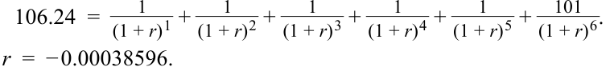
Given that the yield is expressed in semiannual terms, it needs to be annualized by multiplying by 2, which results in –0.000772, or –0.077%.
Vì lợi suất được biểu thị theo kỳ bán niên, nó cần được quy đổi theo năm bằng cách nhân với 2, dẫn đến kết quả là $-0{,}000772$, hay $-0{,}077\%$.
B is incorrect because it is the semiannual, not annual, yield.
B không đúng vì đó là lợi suất bán niên, chứ không phải lợi suất năm.
C is incorrect because 1.883% is the bond’s current yield, not yield-to-maturity.
C không đúng vì 1,883% là lợi suất hiện hành (current yield) của trái phiếu, chứ không phải lợi suất đáo hạn.
- A fixed-income analyst obtains the following data for three corporate bonds with the same maturity dates. The relevant government bond benchmark rate, calculated on a semiannual bond equivalent basis, is 1.10%. Calculate the G-spread for each bond.
- Một chuyên viên phân tích thu nhập cố định thu thập được dữ liệu sau đây cho ba trái phiếu doanh nghiệp có cùng ngày đáo hạn. Lãi suất chuẩn trái phiếu chính phủ có liên quan, được tính trên cơ sở tương đương trái phiếu bán niên (semiannual bond equivalent basis), là 1,10%. Hãy tính mức chênh lệch G (G-spread) cho mỗi trái phiếu.
| Bond A | Bond B | Bond C | |
|---|---|---|---|
| Yield-to-maturity | 1.271% | 1.213% | 1.178% |
| Coupon frequency and assumedperiodicity |
Annual | Semiannual | Quarterly |
| Trái phiếu A (Bond A) | Trái phiếu B (Bond B) | Trái phiếu C (Bond C) | |
|---|---|---|---|
| Lợi suất đáo hạn (Yield-to-maturity) | 1,271% | 1,213% | 1,178% |
| Tần suất coupon và số kỳ ghép lãi giả định (Coupon frequency and assumed periodicity) | Hàng năm (Annual) | Bán niên (Semiannual) | Hàng quý (Quarterly) |
Solution:
Lời giải:
The G-spread for Bond B is (0.01213 – 0.011) = 11.3 bps.
G-spread của Trái phiếu B là $(0{,}01213 - 0{,}011) = 11{,}3\text{ bps}$.
Before computing the G-spreads for Bonds A and C, the yields-to-maturity must first be converted to a periodicity of two. The semiannual equivalent yield for Bond A is 1.267%:
Trước khi tính G-spread cho Trái phiếu A và C, lợi suất đáo hạn của chúng trước tiên phải được chuyển đổi sang số kỳ ghép lãi trong năm là 2 (periodicity of two). Lợi suất tương đương bán niên của Trái phiếu A là 1,267%:
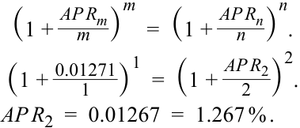
Thus, its G-spread is (0.01267 – 0.011) = 167 bps. The semiannual equivalent yield for Bond C is 1.1797%:
Do đó, G-spread của nó là $(0{,}01267 - 0{,}011) = 16{,}7\text{ bps}$ (trong bản gốc tiếng Anh ghi nhầm là 167 bps do dịch dấu thập phân). Lợi suất tương đương bán niên của Trái phiếu C là 1,1797%:
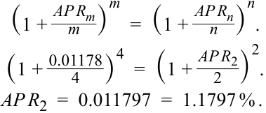
Thus, its G-spread is (0.011797 – 0.011) = 8 bps.
Do đó, G-spread của nó là $(0{,}011797 - 0{,}011) = 8\text{ bps}$ (chính xác là $7{,}97\text{ bps}$).
- If a bond has an embedded call option and the value of the call option is positive, the option-adjusted price, compared to the flat price of the bond, is most likely:
- Nếu một trái phiếu có quyền chọn mua lại đi kèm (embedded call option) và giá trị của quyền chọn mua lại là dương, thì giá đã điều chỉnh quyền chọn (option-adjusted price), so với giá tịnh (flat price) của trái phiếu đó, nhiều khả năng nhất là:
A. lower.
A. thấp hơn.
B. the same.
B. bằng nhau.
C. higher.
C. cao hơn.
Solution:
Lời giải:
A is correct. The value of the call option is the price of the option-free bond minus the price of the callable bond. If the value of the call option is posi-
A là đáp án đúng (theo lời giải trong sách gốc; lưu ý ở phần bài học trang 181 sách định nghĩa giá đã điều chỉnh quyền chọn bằng giá tịnh cộng giá trị quyền chọn mua lại, tức cao hơn giá tịnh, nhưng trong câu hỏi tự đánh giá số 4 này đáp án của sách in là A với lập luận như sau). Giá trị của quyền chọn mua lại bằng giá của trái phiếu không kèm quyền chọn trừ đi giá của trái phiếu có quyền mua lại trước hạn. Nếu giá trị của quyền chọn mua lại là
tive, then the option-adjusted price is lower compared to the flat price of the bond.
dương, thì giá đã điều chỉnh quyền chọn thấp hơn so với giá tịnh của trái phiếu.
B is incorrect because if the value of the call option is positive, the option-adjusted price compared to the flat price of the bond is lower, not the same.
B không đúng vì nếu giá trị của quyền chọn mua lại là dương, giá đã điều chỉnh quyền chọn so với giá tịnh của trái phiếu là thấp hơn, chứ không phải bằng nhau.
C is incorrect because if the value of the call option is positive, the option-adjusted price compared to the flat price of the bond is lower, not higher.
C không đúng vì nếu giá trị của quyền chọn mua lại là dương, giá đã điều chỉnh quyền chọn so với giá tịnh của trái phiếu là thấp hơn, chứ không phải cao hơn.
2
2
PERIODICITY AND ANNUALIZED YIELDS
SỐ KỲ GHÉP LÃI TRONG NĂM VÀ LỢI SUẤT QUY ĐỔI THEO NĂM (PERIODICITY AND ANNUALIZED YIELDS)
calculate annual yield on a bond for varying compounding periods in a year
tính toán lợi suất hàng năm trên một trái phiếu cho các số kỳ ghép lãi (compounding periods) khác nhau trong một năm
Investors analyzing bonds with various cash flow and maturity profiles seek a standardized yield measure to compare across different choices. Yield measures are usually annualized in order to allow a direct comparison. For capital market securities maturing in more than one year, investors want an annualized and compounded yield-to-maturity. Conventions for instruments maturing in one year or less will be covered in a later lesson.
Các nhà đầu tư khi phân tích các trái phiếu có hồ sơ dòng tiền và kỳ hạn đa dạng đều tìm kiếm một thước đo lợi suất chuẩn hóa (standardized) để so sánh giữa các lựa chọn khác nhau. Các thước đo lợi suất thường được quy đổi theo năm (annualized) nhằm cho phép so sánh trực tiếp. Đối với các chứng khoán thị trường vốn đáo hạn sau hơn một năm, các nhà đầu tư muốn có một mức lợi suất đáo hạn được quy đổi theo năm và có ghép lãi (compounded). Các quy ước đối với những công cụ đáo hạn trong vòng một năm hoặc ngắn hơn sẽ được trình bày trong một bài học sau.
An annualized and compounded yield on a fixed-rate bond depends on the assumed number of interest periods in the year, which is called the periodicity of the annual rate. The periodicity typically matches the frequency of coupon payments. For example, the fixed-coupon five-year bond issued by Bright Wheels Automotive (BRWA) from earlier lessons pays semiannual coupons with a stated annual yield-to-maturity of 3.2% for a periodicity of 2—the rate per semiannual period (1.6%) times 2. A bond that pays quarterly coupons has a stated annual yield for a periodicity of 4—the rate per quarter times 4.
Một mức lợi suất quy đổi theo năm và có ghép lãi trên một trái phiếu lãi suất cố định phụ thuộc vào số kỳ tính lãi giả định trong năm, được gọi là số kỳ ghép lãi trong năm (periodicity) của lãi suất năm. Số kỳ ghép lãi trong năm (periodicity) thường khớp với tần suất thanh toán coupon. Ví dụ, trái phiếu kỳ hạn 5 năm trả lãi cố định do Bright Wheels Automotive (BRWA) phát hành từ các bài học trước trả lãi coupon bán niên với lợi suất đáo hạn công bố theo năm là 3,2% ứng với số kỳ ghép lãi trong năm là 2—bằng lãi suất mỗi kỳ nửa năm (1,6%) nhân với 2. Một trái phiếu trả lãi coupon hàng quý có lợi suất công bố theo năm ứng với số kỳ ghép lãi trong năm là 4—bằng lãi suất mỗi quý nhân với 4.
Exhibit 1 shows how a 5% stated annual yield-to-maturity generates different amounts in one year with annual, semiannual, quarterly, monthly compounding based on a fixed-rate par bond priced at 100.
Bảng minh họa 1 cho thấy cách một mức lợi suất đáo hạn công bố theo năm là 5% tạo ra các số tiền lãi khác nhau trong một năm khi ghép lãi hàng năm, bán niên, hàng quý và hàng tháng dựa trên một trái phiếu ngang giá lãi suất cố định có giá là 100.
Exhibit 1: Effective Annual Rate for Different Compounding Periods
Bảng minh họa 1: Lãi Suất Hiệu Dụng Năm Cho Các Kỳ Ghép Lãi Khác Nhau (Exhibit 1: Effective Annual Rate for Different Compounding Periods)
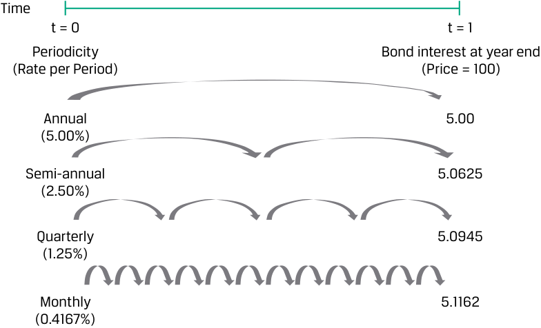
Chú thích hình ảnh: Lãi suất hiệu dụng năm ứng với các số kỳ ghép lãi khác nhau từ $t = 0$ đến $t = 1$ (Giá trái phiếu = 100): - Hàng năm (Annual, 5,00%/kỳ): Tiền lãi trái phiếu vào cuối năm = 5,00. - Bán niên (Semi-annual, 2,50%/kỳ): Tiền lãi trái phiếu vào cuối năm = 5,0625. - Hàng quý (Quarterly, 1,25%/kỳ): Tiền lãi trái phiếu vào cuối năm = 5,0945. - Hàng tháng (Monthly, 0,4167%/kỳ): Tiền lãi trái phiếu vào cuối năm = 5,1162.
The bond interest amounts on the right-hand side of Exhibit 1 expressed as percentages are known as effective annual rates. An effective annual rate has a periodicity of 1 because there is just one compounding period in the year. For example, for a quarterly coupon bond that pays 1.25% per period, or an annual coupon rate of (1.25% × 4) = 5%, each coupon received is assumed to be reinvested at the periodic rate—here, 1.25%—for the remainder of the year. We can solve for the future value of these cash flows using the Excel or Google Sheets FV function:
Số tiền lãi trái phiếu ở phía bên phải của Bảng minh họa 1 khi được biểu thị dưới dạng phần trăm được gọi là lãi suất hiệu dụng năm. Lãi suất hiệu dụng năm (effective annual rate – EAR) có số kỳ ghép lãi trong năm (periodicity) là 1 bởi vì chỉ có duy nhất một kỳ ghép lãi trong năm. Ví dụ, đối với một trái phiếu trả lãi coupon hàng quý ở mức 1,25% mỗi kỳ, hay lãi suất coupon năm là $(1{,}25\% \times 4) = 5\%$, mỗi khoản coupon nhận được đều được giả định là sẽ tái đầu tư ở mức lãi suất định kỳ—ở đây là 1,25%—trong phần thời gian còn lại của năm. Chúng ta có thể giải tìm giá trị tương lai của các dòng tiền này bằng cách sử dụng hàm FV trong Excel hoặc Google Sheets:
~~=FV(rate, nper, pmt, [pv], [type]),~~
=FV(rate, nper, pmt, [pv], [type]),
where
trong đó:
rate is the periodic reinvestment rate
rate là lãi suất tái đầu tư định kỳ
nper is the number of periods in a year
nper là số kỳ trong một năm
pmt is the rate per period
pmt là khoản lãi mỗi kỳ
[ pv ] is the present value
[pv] là giá trị hiện tại
[ type ] indicates when payments occur, with 0 designating payment at the end of each period
[type] cho biết thời điểm thanh toán diễn ra, với 0 chỉ định việc thanh toán vào cuối mỗi kỳ
For the quarterly coupon bond:
Đối với trái phiếu trả lãi coupon hàng quý:
=FV(0.0125,4,1.25,0,0) = 5.0945.
=FV(0.0125,4,1.25,0,0) = 5.0945.
Therefore, assuming each coupon is reinvested at 1.25% through the end of the year, a quarterly coupon bond with an annual stated rate of 5% generates the same interest as an annual coupon bond with a stated rate of 5.0945%. The Excel or Google Sheets EFFECT function may also be used to calculate the effective annual rate for a given number of compounding periods per year.
Do đó, giả định mỗi khoản coupon được tái đầu tư ở mức 1,25% cho đến hết năm, một trái phiếu trả lãi coupon hàng quý với lãi suất công bố theo năm là 5% sẽ tạo ra cùng số tiền lãi như một trái phiếu trả lãi coupon hàng năm với lãi suất công bố là 5,0945%. Hàm EFFECT trong Excel hoặc Google Sheets cũng có thể được sử dụng để tính lãi suất hiệu dụng năm cho một số kỳ ghép lãi nhất định mỗi năm.
The most common periodicity in the United States, the United Kingdom, and several other fixed-income markets is 2 because most bonds in these jurisdictions make semiannual coupon payments. An annual rate having a periodicity of two is known as a semiannual bond basis yield , or semiannual bond equivalent yield . Therefore, a semiannual bond basis yield is the yield per semiannual period times 2. It is important to remember that “semiannual bond basis yield” and “yield per semiannual period” have different meanings. For example, if a bond yield is 2% per semiannual period, its annual yield is 4% when stated on a semiannual bond basis.
Số kỳ ghép lãi trong năm phổ biến nhất tại Hoa Kỳ, Vương quốc Anh và một số thị trường thu nhập cố định khác là 2 bởi vì hầu hết các trái phiếu tại những khu vực tài phán này đều thực hiện thanh toán coupon bán niên. Một mức lãi suất hàng năm có số kỳ ghép lãi là 2 được gọi là lợi suất theo cơ sở trái phiếu bán niên (semiannual bond basis yield), hay lợi suất tương đương trái phiếu bán niên (semiannual bond equivalent yield). Do đó, lợi suất theo cơ sở trái phiếu bán niên bằng lợi suất mỗi kỳ nửa năm nhân với 2. Điều quan trọng cần ghi nhớ là “lợi suất theo cơ sở trái phiếu bán niên” (“semiannual bond basis yield”) và “lợi suất mỗi kỳ nửa năm” (“yield per semiannual period”) có ý nghĩa khác nhau. Ví dụ, nếu lợi suất trái phiếu là 2% mỗi kỳ nửa năm, thì lợi suất hàng năm của nó là 4% khi được công bố trên cơ sở trái phiếu bán niên.
EXAMPLE 1
VÍ DỤ 1 (EXAMPLE 1)
Periodicity of Zero-Coupon Bonds
Số Kỳ Ghép Lãi Trong Năm của Trái Phiếu Không Trả Lãi Định Kỳ (Periodicity of Zero-Coupon Bonds)
The periodicity of the annual market discount rate for a zero-coupon bond is arbitrary because there are no coupon payments. Consider a five-year, zero-coupon bond priced at 80 per 100 of par value. Assuming annual compounding, or a periodicity of one, the yield-to-maturity is 4.564%.
Số kỳ ghép lãi trong năm của lãi suất chiết khấu thị trường hàng năm đối với một trái phiếu không trả lãi định kỳ (zero-coupon bond) là tùy ý (arbitrary) bởi vì không có các khoản thanh toán coupon. Xét một trái phiếu không trả lãi định kỳ kỳ hạn 5 năm được định giá ở mức 80 trên mỗi 100 đơn vị mệnh giá. Giả định ghép lãi hàng năm, tức số kỳ ghép lãi là 1, lợi suất đáo hạn là 4,564%.
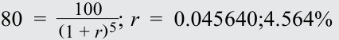
Assuming quarterly compounding, or a periodicity of four, the annual yield-to-maturity for this same five-year, zero-coupon bond is 4.488%.
Giả định ghép lãi hàng quý, tức số kỳ ghép lãi là 4, lợi suất đáo hạn hàng năm cho cùng trái phiếu không trả lãi định kỳ kỳ hạn 5 năm này là 4,488%.
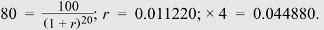
As shown in Exhibit 2, 2.2565% compounded 2 times a year, 1.1220% compounded 4 times a year, and 0.3726% compounded 12 times a year are all equivalent to an effective annual rate of 4.564%.
Như được thể hiện trong Bảng minh họa 2, mức lãi suất 2,2565% ghép lãi 2 lần một năm, 1,1220% ghép lãi 4 lần một năm, và 0,3726% ghép lãi 12 lần một năm đều tương đương với mức lãi suất hiệu dụng năm là 4,564%.
Exhibit 2: Periodicity of Annual Discount Rate for Zero-Coupon Bond
Bảng minh họa 2: Số Kỳ Ghép Lãi Trong Năm của Lãi Suất Chiết Khấu Hàng Năm Đối Với Trái Phiếu Không Trả Lãi Định Kỳ (Exhibit 2: Periodicity of Annual Discount Rate for Zero-Coupon Bond)
| Column 1 | Column 2 | Column 3: (Col. 2 ×5) |
Column 4 | Column 5: (Col. 2 × Col. 4) |
Column 6: (1+Col. 4)^(Col. 2) |
|---|---|---|---|---|---|
| Periodicity | Number of Peri- ods/ Year |
Number of Com- pounding Periods |
Periodic Yield-to- Maturity (%) |
Annual Yield- to-Ma- turity (%) |
Periodic YTM Com- pounded at Periods/ Year (%) |
| Annual | 1 | 5 | 0.045640 | 0.045640 | 0.045640 |
| Semi-annual | 2 | 10 | 0.022565 | 0.045130 | 0.045640 |
| Quarterly | 4 | 20 | 0.011220 | 0.044879 | 0.045640 |
| Monthly | 12 | 60 | 0.003726 | 0.044712 | 0.045640 |
| Cột 1 | Cột 2 | Cột 3: (Cột 2 × 5) |
Cột 4 | Cột 5: (Cột 2 × Cột 4) |
Cột 6: $(1 + \text{Cột 4})^{(\text{Cột 2})} - 1$ |
|---|---|---|---|---|---|
| Tần suất (Periodicity) | Số kỳ / Năm (Number of Periods/Year) | Tổng số kỳ ghép lãi (Number of Compounding Periods) | Lợi suất đáo hạn định kỳ (Periodic YTM) (%) | Lợi suất đáo hạn hàng năm (Annual YTM) (%) | YTM định kỳ được ghép lãi theo số kỳ/năm (%) |
| Hàng năm (Annual) | 1 | 5 | 0,045640 | 0,045640 | 0,045640 |
| Bán niên (Semi-annual) | 2 | 10 | 0,022565 | 0,045130 | 0,045640 |
| Hàng quý (Quarterly) | 4 | 20 | 0,011220 | 0,044879 | 0,045640 |
| Hàng tháng (Monthly) | 12 | 60 | 0,003726 | 0,044712 | 0,045640 |
The compounded total return is the same for each expression for the annual rate. They differ in terms of the number of compounding periods per year—that is, in terms of the periodicity of the annual rate. For a given pair of cash flows, the stated annual rate and the periodicity are inversely related.
Tổng tỷ suất sinh lợi ghép lãi là như nhau đối với mỗi cách biểu diễn lãi suất hàng năm. Chúng chỉ khác nhau về số kỳ ghép lãi mỗi năm—tức là về số kỳ ghép lãi trong năm (periodicity) của lãi suất hàng năm. Đối với một cặp dòng tiền nhất định, lãi suất công bố theo năm và số kỳ ghép lãi trong năm có mối quan hệ tỉ lệ nghịch.
An important tool in fixed-income analysis is the conversion of an annualized yield using one periodicity to another periodicity. These are called periodicity, or compounding, conversions. Equation 1 shows a general formula to convert an annual percentage rate (APR) for m periods per year, denoted APRm , to an annual percentage rate for n periods per year, APRn :
Một công cụ quan trọng trong phân tích thu nhập cố định là việc chuyển đổi một mức lợi suất quy đổi theo năm từ một số kỳ ghép lãi này sang một số kỳ ghép lãi khác. Đây được gọi là phép chuyển đổi số kỳ ghép lãi (periodicity conversions hay compounding conversions). Phương trình 1 thể hiện công thức tổng quát để chuyển đổi một mức lãi suất phần trăm năm (annual percentage rate – APR) cho $m$ kỳ mỗi năm, ký hiệu là $APR_m$, sang mức lãi suất phần trăm năm cho $n$ kỳ mỗi năm, ký hiệu là $APR_n$:
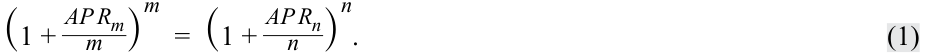
For example, suppose that a three-year, 5% semiannual coupon payment corporate bond is priced at 104 per 100 of par value. Its yield-to-maturity is 3.582%, quoted on a semiannual bond basis for a periodicity of 2: 0.01791 × 2 = 0.03582.
Ví dụ, giả sử một trái phiếu doanh nghiệp kỳ hạn 3 năm, trả lãi coupon bán niên 5%/năm được định giá ở mức 104 trên mỗi 100 đơn vị mệnh giá. Lợi suất đáo hạn của nó là 3,582%, được yết trên cơ sở trái phiếu bán niên ứng với số kỳ ghép lãi là 2: $0{,}01791 \times 2 = 0{,}03582$.
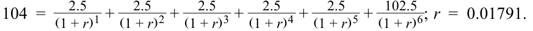
To compare this bond with others, an analyst converts this annualized yield-to-maturity to quarterly and monthly compounding. Doing so entails using Equation 1 to convert from a periodicity of m = 2 to periodicities of n = 4 and n = 12.
Để so sánh trái phiếu này với các trái phiếu khác, một chuyên viên phân tích chuyển đổi mức lợi suất đáo hạn quy đổi theo năm này sang ghép lãi hàng quý và hàng tháng. Việc này đòi hỏi sử dụng Phương trình 1 để chuyển đổi từ số kỳ ghép lãi $m = 2$ sang số kỳ ghép lãi $n = 4$ và $n = 12$.
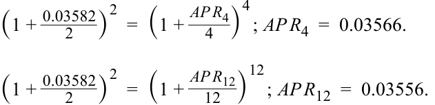
An annual yield-to-maturity of 3.582% for semiannual compounding provides the same rate of return as annual yields of 3.566% and 3.556% for quarterly and monthly compounding, respectively. A general rule for periodicity conversions is compounding more frequently at a lower annual rate corresponds to compounding less frequently at a higher annual rate . This rule can be used to check periodicity conversion calculations.
Mức lợi suất đáo hạn hàng năm 3,582% khi ghép lãi bán niên mang lại cùng tỷ suất sinh lợi như mức lợi suất hàng năm 3,566% và 3,556% khi ghép lãi lần lượt theo quý và theo tháng. Một quy tắc chung cho việc chuyển đổi số kỳ ghép lãi là ghép lãi thường xuyên hơn ở mức lãi suất năm thấp hơn sẽ tương ứng với ghép lãi ít thường xuyên hơn ở mức lãi suất năm cao hơn. Quy tắc này có thể được sử dụng để kiểm tra các phép tính chuyển đổi số kỳ ghép lãi.
EXAMPLE 2
VÍ DỤ 2 (EXAMPLE 2)
Comparing Strip Bonds to Coupon Bonds
So Sánh Trái Phiếu Tách Lãi Với Trái Phiếu Trả Lãi Định Kỳ (Comparing Strip Bonds to Coupon Bonds)
Financial intermediaries can own coupon bonds and then issue individual zero-coupon bonds composed of coupon or principal payments from the coupon bonds. These zero-coupon bonds are known as strip bonds. Strip bonds are attractive to investors seeking to match known cash flows on a specific future date.
Các định chế trung gian tài chính có thể sở hữu các trái phiếu trả lãi coupon định kỳ rồi sau đó phát hành các trái phiếu không trả lãi định kỳ (zero-coupon bonds) riêng lẻ được cấu thành từ các khoản thanh toán coupon hoặc gốc của những trái phiếu trả lãi coupon đó. Những trái phiếu không trả lãi định kỳ này được gọi là trái phiếu tách lãi (strip bonds). Trái phiếu tách lãi hấp dẫn đối với các nhà đầu tư đang tìm cách khớp các dòng tiền đã biết vào một ngày cụ thể trong tương lai.
A 20-year government of Canada strip (zero-coupon) bond is priced at 69.4300 per 100. An analyst wants to compare the yield of the strip bond with that of a newly issued 20-year coupon bond. Both the strip bond and the coupon bond are non-callable. The 20-year coupon bond pays semiannual coupons of 2%, and its current price is 101.99 per 100, which corresponds to a semiannual bond equivalent yield of 1.880%.
Một trái phiếu tách lãi (strip bond – không trả lãi định kỳ) kỳ hạn 20 năm của chính phủ Canada được định giá ở mức 69,4300 trên mỗi 100 đơn vị mệnh giá. Một chuyên viên phân tích muốn so sánh lợi suất của trái phiếu tách lãi này với lợi suất của một trái phiếu trả lãi coupon kỳ hạn 20 năm mới được phát hành. Cả trái phiếu tách lãi và trái phiếu trả lãi coupon đều không kèm quyền mua lại trước hạn. Trái phiếu trả lãi coupon kỳ hạn 20 năm trả lãi bán niên 2%/năm, và giá hiện tại của nó là 101,99 trên mỗi 100 đơn vị mệnh giá, tương ứng với mức lợi suất tương đương trái phiếu bán niên là 1,880%.
The analyst will compute a semiannual bond equivalent yield for the strip bond and compare it to the semiannual bond equivalent yield of 1.880% of the 20-year coupon bond.
Chuyên viên phân tích sẽ tính lợi suất tương đương trái phiếu bán niên cho trái phiếu tách lãi và so sánh nó với mức lợi suất tương đương trái phiếu bán niên 1,880% của trái phiếu trả lãi coupon kỳ hạn 20 năm.
There are two approaches. The first involves calculating a yield-to-maturity assuming annual compounding for the strip bond and converting it to a semiannual equivalent bond yield. The second approach involves directly computing a semiannual yield-to-maturity for the strip bond and annualizing it by multiplying it by 2.
Có hai phương pháp tiếp cận. Phương pháp thứ nhất bao gồm việc tính lợi suất đáo hạn giả định ghép lãi hàng năm cho trái phiếu tách lãi rồi chuyển đổi nó sang lợi suất tương đương trái phiếu bán niên. Phương pháp thứ hai bao gồm việc tính trực tiếp lợi suất đáo hạn bán niên cho trái phiếu tách lãi rồi quy đổi theo năm bằng cách nhân với 2.
Approach 1
Phương pháp 1 (Approach 1)
The 20-year strip bond does not pay any coupons, so as the first step, we assume annual compounding (periodicity of 1) to calculate an effective annual rate based on the current price and remaining years to maturity.
Trái phiếu tách lãi kỳ hạn 20 năm không trả bất kỳ khoản coupon nào, vì vậy ở bước đầu tiên, chúng ta giả định ghép lãi hàng năm (số kỳ ghép lãi là 1) để tính lãi suất hiệu dụng năm dựa trên mức giá hiện tại và số năm còn lại cho đến khi đáo hạn.
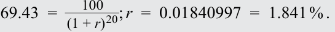
The next step is to convert the effective annual rate to semiannual bond equivalent yield. This is done by using Equation 1 to convert from a periodicity of 1 to a periodicity of 2.
Bước tiếp theo là chuyển đổi lãi suất hiệu dụng năm sang lợi suất tương đương trái phiếu bán niên. Việc này được thực hiện bằng cách sử dụng Phương trình 1 để chuyển đổi từ số kỳ ghép lãi là 1 sang số kỳ ghép lãi là 2.
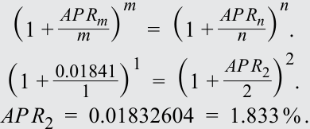
Approach 2
Phương pháp 2 (Approach 2)
Alternatively, we can assume that compounding happens semiannually (periodicity of two) and the effective rate calculated would be semiannual.
Cách khác, chúng ta có thể giả định rằng việc ghép lãi diễn ra mỗi nửa năm (số kỳ ghép lãi là 2) và mức lãi suất hiệu dụng tính được sẽ là lãi suất bán niên.
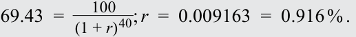
To annualize this, we multiply it by 2 and obtain the same result as the first approach: 1.833%.
Để quy đổi theo năm, chúng ta nhân kết quả này với 2 và thu được cùng kết quả như phương pháp thứ nhất: 1,833%.
EXAMPLE 3
VÍ DỤ 3 (EXAMPLE 3)
Periodicity Conversion with Negative Yields
Chuyển Đổi Số Kỳ Ghép Lãi Với Lợi Suất Âm (Periodicity Conversion with Negative Yields)
Assume the German government issues a five-year zero-coupon bond at a price of 103.72. Calculate the effective annual rate of the bond at issuance assuming annual, semiannual, and monthly compounding.
Giả sử chính phủ Đức phát hành một trái phiếu không trả lãi định kỳ kỳ hạn 5 năm ở mức giá 103,72. Hãy tính lãi suất năm của trái phiếu tại thời điểm phát hành giả định ghép lãi hàng năm, bán niên và hàng tháng.
Solution:
Lời giải:
First, we can calculate the German bond’s yield-to-maturity as an effective annual rate assuming the periodicity of 1.
Trước tiên, chúng ta có thể tính lợi suất đáo hạn của trái phiếu Đức dưới dạng lãi suất hiệu dụng năm giả định số kỳ ghép lãi là 1.
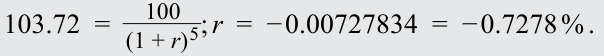
Converting that yield to semiannual and monthly compounding requires using Equation 1 to convert to from a periodicity of 1 to periodicities of 2 and 12, respectively.
Việc chuyển đổi mức lợi suất đó sang ghép lãi bán niên và hàng tháng đòi hỏi phải sử dụng Phương trình 1 để chuyển đổi từ số kỳ ghép lãi là 1 sang số kỳ ghép lãi lần lượt là 2 và 12.
Conversion of an annual yield ( m = 1) to semiannual ( n = 2):
Chuyển đổi từ lợi suất năm ($m = 1$) sang bán niên ($n = 2$):
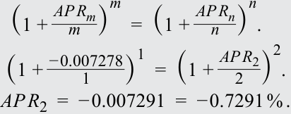
Conversion of an annual yield ( m = 1) to monthly ( n = 12):
Chuyển đổi từ lợi suất năm ($m = 1$) sang hàng tháng ($n = 12$):
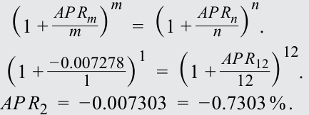
Lưu ý: Các đại lượng trong phép tính không được làm tròn trong quá trình tính toán, mặc dù chúng được hiển thị với ba chữ số thập phân cho mục đích trình bày. Kết quả cuối cùng được làm tròn đến ba chữ số thập phân.
Note : Quantities in the calculation are not rounded, though they are shown with three decimal places for presentation purposes. Solutions are rounded to three decimal places.
QUESTION SET
BỘ CÂU HỎI (QUESTION SET)
- A bond has a yield-to-maturity of –0.50% using annual compounding. If the yield is converted to monthly compounding, it will most likely be:
-
A. greater than –0.50%.
-
B. equal to –0.50%.
- Một trái phiếu có lợi suất đáo hạn là $-0{,}50\%$ khi sử dụng ghép lãi hàng năm. Nếu lợi suất này được chuyển đổi sang ghép lãi hàng tháng, nó sẽ nhiều khả năng nhất là:
-
A. lớn hơn $-0{,}50\%$.
-
B. bằng $-0{,}50\%$.
C. less than –0.50%. Solution:
- C. nhỏ hơn $-0{,}50\%$.
Lời giải:
C is correct. A general rule for periodicity conversions is compounding more frequently within the year corresponds to a lower (or more negative) yield-to-maturity.
C là đáp án đúng. Một quy tắc chung đối với việc chuyển đổi số kỳ ghép lãi là việc ghép lãi thường xuyên hơn trong năm tương ứng với mức lợi suất đáo hạn thấp hơn (hoặc âm nhiều hơn).
- Convert a yield of 1.736% compounded monthly to an effective annual rate. Solution:
- Chuyển đổi mức lợi suất 1,736% ghép lãi hàng tháng sang lãi suất hiệu dụng năm.
Lời giải:
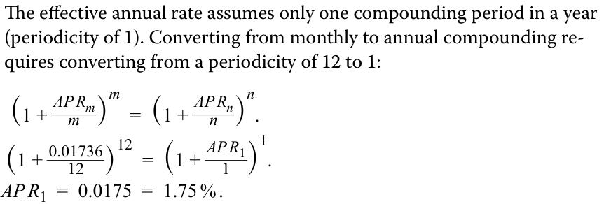
- When calculating yield-to-maturity for a strip (zero-coupon) bond, the periodicity must be 1.
Lãi suất hiệu dụng năm giả định chỉ có duy nhất một kỳ ghép lãi trong một năm (số kỳ ghép lãi là 1). Việc chuyển đổi từ ghép lãi hàng tháng sang hàng năm đòi hỏi phải chuyển đổi từ số kỳ ghép lãi là 12 sang 1:
Justify your answer.
- Khi tính lợi suất đáo hạn cho một trái phiếu tách lãi (strip bond – không trả lãi định kỳ), số kỳ ghép lãi trong năm bắt buộc phải là 1.
Giải thích câu trả lời của bạn.
A. True B. False
A. Đúng (True) B. Sai (False)
Solution
Lời giải
False. The periodicity of the annual market discount rate for a zero-coupon bond is arbitrary because there are no coupon payments. For example, a yield calculated using quarterly periodicity (4) can simply be converted to a yield with annual periodicity (1).
Sai. Số kỳ ghép lãi trong năm của lãi suất chiết khấu thị trường hàng năm đối với một trái phiếu không trả lãi định kỳ là tùy ý bởi vì không có các khoản thanh toán coupon. Ví dụ, một mức lợi suất được tính bằng cách sử dụng số kỳ ghép lãi hàng quý (4) có thể dễ dàng được chuyển đổi sang mức lợi suất có số kỳ ghép lãi hàng năm (1).
OTHER YIELD MEASURES, CONVENTIONS, AND ACCOUNTING FOR EMBEDDED OPTIONS
CÁC THƯỚC ĐO LỢI SUẤT KHÁC, CÁC QUY ƯỚC VÀ VIỆC HẠCH TOÁN CÁC QUYỀN CHỌN ĐI KÈM (OTHER YIELD MEASURES, CONVENTIONS, AND ACCOUNTING FOR EMBEDDED OPTIONS)
3
3
compare, calculate, and interpret yield and yield spread measures for fixed-rate bonds
so sánh, tính toán và diễn giải các thước đo lợi suất (yield measures) và chênh lệch lợi suất (yield spread measures) cho trái phiếu lãi suất cố định
Other Yield Measures and Conventions
Các Thước Đo Lợi Suất Khác và Các Quy Ước (Other Yield Measures and Conventions)
The current yield, a simple measure equal to a bond’s annual coupon divided by the flat price, was introduced in an earlier lesson. For example, if the BRWA 3.2% semiannual fixed-coupon five-year bond introduced earlier were trading at a price of 98.7 per $100 in face value at time t , its current yield would be
Lợi suất hiện hành (current yield), một thước đo đơn giản bằng tiền lãi coupon hàng năm của trái phiếu chia cho giá tịnh (flat price), đã được giới thiệu trong một bài học trước. Ví dụ, nếu trái phiếu BRWA kỳ hạn 5 năm trả lãi coupon cố định bán niên 3,2%/năm được giới thiệu trước đó đang giao dịch ở mức giá 98,7 trên mỗi 100 đô la mệnh giá tại thời điểm $t$, thì lợi suất hiện hành của nó sẽ là:
CYt = Annual coupon t /Bond price t ~~(2)~~ = 3.2%/0.987 = 3.242%.
The current yield is a crude measure of return because it focuses solely on interest income, ignoring the frequency of coupon payments, interest on interest (time value of money), and accrued interest. In addition to collecting and reinvesting coupon payments, the investor has a gain if the bond is purchased at a discount and is redeemed at par value. The investor has a loss if the bond is purchased at a premium and is redeemed at par value.
Lợi suất hiện hành là một thước đo tỷ suất sinh lợi thô sơ bởi vì nó chỉ tập trung vào thu nhập lãi đơn thuần, bỏ qua tần suất thanh toán coupon, tiền lãi sinh ra từ lãi (interest on interest – giá trị thời gian của tiền tệ) và lãi tích lũy (accrued interest). Bên cạnh việc thu thập và tái đầu tư các khoản thanh toán coupon, nhà đầu tư còn có một khoản lãi vốn (gain) nếu trái phiếu được mua ở mức chiết khấu và được hoàn trả ngang mệnh giá. Nhà đầu tư sẽ chịu một khoản lỗ vốn (loss) nếu trái phiếu được mua ở mức phần bù và được hoàn trả ngang mệnh giá.
In practice, the actual timing of cash flows is important for quoting and calculating bond yields-to-maturity. Consider from earlier the 30-year 4.625% annual coupon Romania eurobond maturing on 3 April 2049. Suppose that for settlement on 3 April 2026, the bond is priced at 97.3684 per 100 of par value to yield 4.75% quoted on an annual, actual/actual basis. Its coupon payment is scheduled for 3 April of each year. The yield calculation implicitly assumes that the payments are made on those exact dates. This calculation ignores the fact that several of those dates are not business days. For example, both 3 April 2027 and 3 April 2032 are Saturdays, so investors will receive coupon payments on the following Mondays, 5 April 2027 and 2032, respectively.
Trên thực tế, thời điểm thực tế của các dòng tiền là yếu tố quan trọng để báo giá và tính toán lợi suất đáo hạn của trái phiếu. Hãy xét lại trái phiếu Eurobond kỳ hạn 30 năm trả lãi coupon hàng năm 4,625% của Romania đáo hạn vào ngày 3 tháng 4 năm 2049 từ phần trước. Giả sử đối với ngày thanh toán giao dịch là ngày 3 tháng 4 năm 2026, trái phiếu được định giá ở mức 97,3684 trên mỗi 100 đơn vị mệnh giá để đạt mức lợi suất 4,75% được yết trên cơ sở hàng năm, đếm ngày thực tế/thực tế (actual/actual). Khoản thanh toán coupon của nó được lên lịch vào ngày 3 tháng 4 hàng năm. Phép tính lợi suất này ngầm giả định rằng các khoản thanh toán được thực hiện vào chính xác những ngày đó. Phép tính này bỏ qua thực tế là có một số ngày trong số đó không phải là ngày làm việc (business days). Ví dụ, cả ngày 3 tháng 4 năm 2027 và ngày 3 tháng 4 năm 2032 đều là ngày Thứ Bảy, vì vậy các nhà đầu tư sẽ nhận được các khoản thanh toán coupon vào các ngày Thứ Hai kế tiếp, lần lượt là ngày 5 tháng 4 năm 2027 và năm 2032.
Yield measures that assume payments are made on scheduled dates and that do not account for weekends and holidays are quoted on what is called street convention . This assumption simplifies bond price and yield calculations and commonly is used in practice. A true yield that uses the actual payment dates (e.g., 5 April 2027 and 2032 in the Romania bond example), accounting for weekends and holidays, can also be computed. The true yield is never higher than the street convention yield because weekends and holidays delay the time to payment. The difference is typically small, no more than a basis point or two. Therefore, the true yield is not commonly used in practice.
Các thước đo lợi suất giả định rằng các khoản thanh toán được thực hiện vào đúng các ngày theo lịch trình và không tính đến các ngày cuối tuần cũng như ngày nghỉ lễ được yết theo cái gọi là quy ước thông lệ thị trường (street convention). Giả định này làm đơn giản hóa các phép tính giá và lợi suất trái phiếu và thường được sử dụng trên thực tế. Lợi suất thực (true yield) sử dụng các ngày thanh toán thực tế (ví dụ: ngày 5 tháng 4 năm 2027 và năm 2032 trong ví dụ trái phiếu Romania), có tính đến các ngày cuối tuần và ngày nghỉ lễ, cũng có thể được tính toán. Lợi suất thực không bao giờ cao hơn lợi suất theo quy ước thông lệ thị trường (street convention yield) bởi vì ngày cuối tuần và ngày nghỉ lễ làm trì hoãn thời gian nhận thanh toán. Sự chênh lệch này thường rất nhỏ, không quá một hoặc hai điểm cơ bản (basis points). Do đó, lợi suất thực không thường được sử dụng trên thực tế.
Recall that corporate bond yields typically use the 30/360 day count convention. Sometimes, these yields are restated using an actual/actual day count, known as a government equivalent yield . The government equivalent yield on a corporate bond can be used to obtain the spread (difference) over a government bond yield.
Hãy nhớ lại rằng lợi suất trái phiếu doanh nghiệp thường sử dụng quy ước đếm ngày 30/360. Đôi khi, các mức lợi suất này được quy đổi lại bằng cách sử dụng quy ước đếm ngày thực tế/thực tế (actual/actual), được gọi là lợi suất tương đương trái phiếu chính phủ (government equivalent yield). Lợi suất tương đương trái phiếu chính phủ trên một trái phiếu doanh nghiệp có thể được sử dụng để thu được mức chênh lệch (spread) so với lợi suất trái phiếu chính phủ.
EXAMPLE 4
VÍ DỤ 4 (EXAMPLE 4)
Government Equivalent Yield for BRWA Five-Year Bond
Lợi Suất Tương Đương Trái Phiếu Chính Phủ Cho Trái Phiếu BRWA Kỳ Hạn 5 Năm (Government Equivalent Yield for BRWA Five-Year Bond)
In an earlier example, BRWA issued a 3.2% semiannual fixed-coupon five-year bond at par. As is standard for corporate bonds, the BRWA bond yield is calculated on a 30/360 day count basis. The comparable five-year US Treasury bond yields 2.3%, but as a government bond, the yield is calculated using the actual/ actual day count basis. While the yield difference appears to be 90 bps (= 3.2% – 2.3%), the day count bases differ.
Trong một ví dụ trước, BRWA đã phát hành một trái phiếu kỳ hạn 5 năm trả lãi coupon cố định bán niên 3,2%/năm ngang mệnh giá (at par). Theo tiêu chuẩn đối với trái phiếu doanh nghiệp, lợi suất trái phiếu BRWA được tính trên cơ sở đếm ngày 30/360. Trái phiếu Kho bạc Hoa Kỳ kỳ hạn 5 năm tương đương có lợi suất là 2,3%, nhưng vì là trái phiếu chính phủ nên lợi suất của nó được tính bằng cơ sở đếm ngày thực tế/thực tế (actual/actual). Mặc dù mức chênh lệch lợi suất có vẻ như là 90 bps ($= 3{,}2\% - 2{,}3\%$), nhưng cơ sở đếm ngày của chúng lại khác nhau.
Calculate the government equivalent yield for the BRWA bond and show the yield difference between the BRWA and government bonds based on the same day count basis.
Hãy tính lợi suất tương đương trái phiếu chính phủ cho trái phiếu BRWA và chỉ ra mức chênh lệch lợi suất giữa trái phiếu BRWA và trái phiếu chính phủ dựa trên cùng một cơ sở đếm ngày.
Solution:
Lời giải:
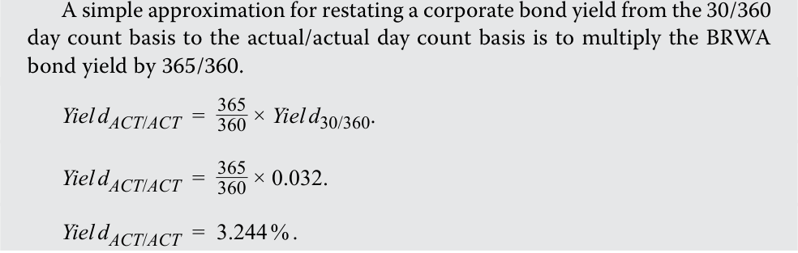
Một phép xấp xỉ đơn giản để quy đổi lợi suất trái phiếu doanh nghiệp từ cơ sở đếm ngày 30/360 sang cơ sở đếm ngày thực tế/thực tế là nhân lợi suất trái phiếu BRWA với $365/360$:
The bond equivalent yield for the BRWA bond is 3.2444%; hence, the yield-to-maturity difference between two bonds is 94.4 bps (= 3.2444% – 2.3%).
Lợi suất tương đương trái phiếu chính phủ của trái phiếu BRWA là 3,2444%; do đó, mức chênh lệch lợi suất đáo hạn giữa hai trái phiếu là 94,4 bps ($= 3{,}2444\% - 2{,}3\%$).
Sometimes the simple yield on a bond is quoted. It is the sum of the coupon payments plus the straight-line amortized share of the gain or loss, divided by the flat price. Simple yields are used mostly to quote Japanese government bonds, known as JGBs.
Đôi khi lợi suất đơn (simple yield) trên một trái phiếu được yết giá. Đó là tổng của các khoản thanh toán coupon hàng năm cộng với phần phân bổ tuyến tính (straight-line amortized share) của khoản lãi hoặc lỗ vốn, chia cho giá tịnh (flat price). Lợi suất đơn được sử dụng chủ yếu để báo giá trái phiếu chính phủ Nhật Bản, được gọi là JGBs.
Exhibit 3: Summary of Yield Conventions
Bảng minh họa 3: Tóm Tắt Các Quy Ước Lợi Suất (Exhibit 3: Summary of Yield Conventions)
| Convention | Meaning |
|---|---|
| Actual/Actual | Actual number of days from prior coupon payment to settlement |
| (Act/Act) | date/number of days in a coupon period, assuming the actual num- ber of days in a year. Typically used with government bonds. |
| 30/360 | Number of days from prior coupon payment to settlement date, assuming 30 days in a month/number of days in a coupon period, assuming 360 days in a year. Typically used with corporate bonds. |
| Street Convention | Yield measure that does not account for weekends and bank holidays and thus assumes cash flows are paid on their scheduled dates. |
| True Yield | Yield measure that accounts for weekends and bank holidays and thus assumes cash flows are paid after their scheduled dates. True yield is never higher than street convention yield due to the delay in time to payment. |
| Government Equivalent Yield |
Yield measure that restates a yield-to-maturity based on a 30/360 day count to one based on an actual/actual day count. It is used to restate the YTM on a corporate bond to obtain the spread over the government YTM. |
| Simple Yield | Yield measure that is the sum of coupon payments plus the straight-line amortized share of the gain or loss, divided by the flat price. It is used mostly to quote Japanese government bonds (JGBs). |
| Quy ước (Convention) | Ý nghĩa (Meaning) |
|---|---|
| Thực tế/Thực tế (Actual/Actual – Act/Act) | Số ngày thực tế từ lần thanh toán coupon trước đến ngày thanh toán giao dịch / tổng số ngày trong kỳ trả lãi coupon, giả định số ngày thực tế trong một năm. Thường được sử dụng với trái phiếu chính phủ. |
| 30/360 | Số ngày từ lần thanh toán coupon trước đến ngày thanh toán giao dịch, giả định có 30 ngày trong một tháng / tổng số ngày trong kỳ trả lãi coupon, giả định có 360 ngày trong một năm. Thường được sử dụng với trái phiếu doanh nghiệp. |
| Quy ước thông lệ thị trường (Street Convention) | Thước đo lợi suất không tính đến ngày cuối tuần và ngày nghỉ lễ ngân hàng, do đó giả định các dòng tiền được thanh toán vào đúng các ngày theo lịch trình của chúng. |
| Lợi suất thực (True Yield) | Thước đo lợi suất có tính đến ngày cuối tuần và ngày nghỉ lễ ngân hàng, do đó giả định các dòng tiền được thanh toán sau các ngày theo lịch trình khi trùng ngày nghỉ. Lợi suất thực không bao giờ cao hơn lợi suất theo quy ước thông lệ thị trường do sự chậm trễ về thời gian thanh toán. |
| Lợi suất tương đương trái phiếu chính phủ (Government Equivalent Yield) | Thước đo lợi suất quy đổi lại lợi suất đáo hạn dựa trên quy ước đếm ngày 30/360 sang mức lợi suất dựa trên quy ước đếm ngày thực tế/thực tế. Nó được sử dụng để quy đổi lại YTM trên một trái phiếu doanh nghiệp nhằm thu được mức chênh lệch (spread) so với YTM của trái phiếu chính phủ. |
| Lợi suất đơn (Simple Yield) | Thước đo lợi suất bằng tổng các khoản thanh toán coupon cộng với phần phân bổ tuyến tính của khoản lãi hoặc lỗ vốn, chia cho giá tịnh. Nó được sử dụng chủ yếu để báo giá trái phiếu chính phủ Nhật Bản (JGBs). |
EXAMPLE 5
VÍ DỤ 5 (EXAMPLE 5)
Comparing Yields for Different Periodicities
So Sánh Lợi Suất Cho Các Số Kỳ Ghép Lãi Khác Nhau (Comparing Yields for Different Periodicities)
An analyst observes the following reported statistics for two bonds.
Một chuyên viên phân tích quan sát thấy các số liệu thống kê được báo cáo sau đây cho hai trái phiếu.
| Antelas AG Bond | BRWA Bond |
|
|---|---|---|
| Annual Coupon Rate | 3.20% | 2.50% |
| Coupon Payment Frequency | Quarterly | Semiannually |
| Years to Maturity | 5 Years | 5 Years |
| Price (per 100 of par value) | 94 | 98.70 |
| Current Yield | 3.40% | 2.53% |
| Yield-to-Maturity | 4.548% | 2.780% |
| Trái phiếu Antelas AG (Antelas AG Bond) | Trái phiếu BRWA (BRWA Bond) | |
|---|---|---|
| Lãi suất coupon hàng năm (Annual Coupon Rate) | 3,20% | 2,50% |
| Tần suất thanh toán coupon (Coupon Payment Frequency) | Hàng quý (Quarterly) | Bán niên (Semiannually) |
| Số năm đáo hạn (Years to Maturity) | 5 năm | 5 năm |
| Giá (trên 100 đơn vị mệnh giá) (Price) | 94 | 98,70 |
| Lợi suất hiện hành (Current Yield) | 3,40% | 2,53% |
| Lợi suất đáo hạn (Yield-to-Maturity) | 4,548% | 2,780% |
1. Confirm the calculation of the current yield and yield-to-maturity for the two bonds.
1. Xác nhận phép tính lợi suất hiện hành và lợi suất đáo hạn cho hai trái phiếu.
2. The analyst believes that the BRWA bond has less risk than the Antelas AG bond. How much additional compensation, in terms of basis points of yield-to-maturity, does a buyer of the Antelas AG bond receive for bearing this risk compared with the BRWA bond?
2. Chuyên viên phân tích tin rằng trái phiếu BRWA có ít rủi ro hơn so với trái phiếu Antelas AG. Người mua trái phiếu Antelas AG nhận được bao nhiêu mức đền bù bổ sung, tính bằng điểm cơ bản (basis points) của lợi suất đáo hạn, cho việc gánh chịu rủi ro này so với trái phiếu BRWA?
Solution to 1:
Lời giải câu 1:
Recall that the current yield is the annual coupon expressed as a percentage of a bond’s flat price. _____Annual coupon Current yield = Flat price. Current yield for Antelas AG bond:CY= 3.20 94. _CY = 0.0340 = 3.40 % . Current yield for BRWA bond:CY= 98.702.50. _CY = 0.0253 = 2.53 % .
Hãy nhớ lại rằng lợi suất hiện hành là khoản coupon hàng năm được biểu thị dưới dạng phần trăm so với giá tịnh của trái phiếu.
Lợi suất hiện hành đối với trái phiếu Antelas AG:
Recall that the yield-to-maturity is an internal rate of return, the discount rate r that equates the price of a bond to the present value of future cash flows.
Lợi suất hiện hành đối với trái phiếu BRWA:
PV = PMT 1/(1 + r )1 + PMT 2/(1 + r )2 + … + ( PMTN + FVN )/(1 + r )N .
Hãy nhớ lại rằng lợi suất đáo hạn là một tỷ suất hoàn vốn nội bộ, tức mức lãi suất chiết khấu $r$ làm cân bằng giá của một trái phiếu với giá trị hiện tại của các dòng tiền tương lai.
The yield-to-maturity can also be calculated using the YIELD and IRR functions in Microsoft Excel or Google Sheets.
Lợi suất đáo hạn cũng có thể được tính bằng các hàm YIELD và IRR trong Microsoft Excel hoặc Google Sheets.
| Antelas AG Bond | BRWA Bond | ||
|---|---|---|---|
| Settlement date | 1/1/2000 | Settlement date | 1/1/2000 |
| Maturity date | 1/1/2005 | Maturity date | 1/1/2005 |
| Coupon | 0.032 | Coupon | 0.025 |
| Price | 94 | Price | 98.7 |
| Redemption | 100 | Redemption | 100 |
| Coupon frequency | 4 | Coupon frequency | 2 |
| YIELD | 4.548% | YIELD | 2.780% |
| Trái phiếu Antelas AG (Antelas AG Bond) | Trái phiếu BRWA (BRWA Bond) | ||
|---|---|---|---|
| Ngày thanh toán (Settlement date) | 1/1/2000 | Ngày thanh toán (Settlement date) | 1/1/2000 |
| Ngày đáo hạn (Maturity date) | 1/1/2005 | Ngày đáo hạn (Maturity date) | 1/1/2005 |
| Lãi suất coupon (Coupon) | 0,032 | Lãi suất coupon (Coupon) | 0,025 |
| Giá (Price) | 94 | Giá (Price) | 98,7 |
| Giá trị hoàn trả (Redemption) | 100 | Giá trị hoàn trả (Redemption) | 100 |
| Tần suất coupon (Coupon frequency) | 4 | Tần suất coupon (Coupon frequency) | 2 |
| LỢI SUẤT (YIELD) | 4,548% | LỢI SUẤT (YIELD) | 2,780% |
Solution to 2:
Lời giải câu 2:
The yields-to-maturity on the two bonds have different periodicity assumptions. Therefore, the difference in the yields is not 177 bps (0.04548 – 0.02780). It is essential to compare the yields for the same periodicity to make a statement about relative value.
Lợi suất đáo hạn trên hai trái phiếu có các giả định khác nhau về số kỳ ghép lãi trong năm (periodicity). Do đó, sự chênh lệch về lợi suất không phải là 177 bps ($0{,}04548 - 0{,}02780$). Điều cốt yếu là phải so sánh các mức lợi suất trên cùng một số kỳ ghép lãi để đưa ra nhận định về giá trị tương đối (relative value).
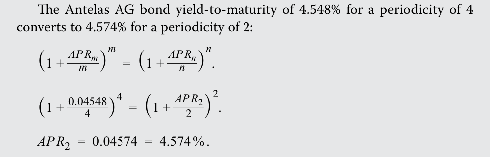
When the yields-to-maturity for the Antelas AG and BRWA bonds are stated on a common periodicity, the additional yield that the buyer of the Antelas AG bond receives to compensate for its higher risk, compared to the BRWA bond, is (0.04574 – 0.02780) =179 bps.
Lợi suất đáo hạn 4,548% của trái phiếu Antelas AG ứng với số kỳ ghép lãi là 4 chuyển đổi thành 4,574% ứng với số kỳ ghép lãi là 2:
Khi lợi suất đáo hạn của trái phiếu Antelas AG và trái phiếu BRWA được công bố trên cùng một số kỳ ghép lãi chung, phần lợi suất bổ sung mà người mua trái phiếu Antelas AG nhận được để đền bù cho rủi ro cao hơn của nó, so với trái phiếu BRWA, là $(0{,}04574 - 0{,}02780) = 179\text{ bps}$.
Bonds with Embedded Options
Trái Phiếu Có Quyền Chọn Đi Kèm (Bonds with Embedded Options)
If a fixed-rate bond contains an embedded option, other yield measures are used. Recall from an earlier lesson that these bond contingency provisions cannot be removed and traded separately from the bond. For example, a callable bond gives the issuer the right to buy the bond back from the investor. This occurs at specific prices on pre-determined dates after a call protection period during which the issuer is not allowed to exercise the call option.
Nếu một trái phiếu lãi suất cố định có chứa một quyền chọn đi kèm (embedded option), các thước đo lợi suất khác sẽ được sử dụng. Hãy nhớ lại từ bài học trước rằng các điều khoản dự phòng (contingency provisions) này của trái phiếu không thể bị tách rời và giao dịch độc lập với trái phiếu. Ví dụ, một trái phiếu có quyền mua lại trước hạn (callable bond) trao cho tổ chức phát hành quyền mua lại trái phiếu từ nhà đầu tư. Việc này diễn ra tại các mức giá cụ thể vào những ngày được xác định trước sau một giai đoạn bảo vệ khỏi việc mua lại (call protection period) mà trong thời gian đó tổ chức phát hành không được phép thực hiện quyền chọn mua lại.
For example, an earlier lesson on callable bonds introduced Vivivyu Inc. (VIVU) seven-year callable notes (see Exhibit 4).
Ví dụ, một bài học trước về trái phiếu có quyền mua lại trước hạn đã giới thiệu trái phiếu trung hạn có quyền mua lại kỳ hạn 7 năm của Vivivyu Inc. (VIVU) (xem Bảng minh họa 4).
Exhibit 4: 6.5% VIVU Seven-Year Callable Notes Term Sheet
Bảng minh họa 4: Bản Điều Khoản Trái Phiếu Có Quyền Mua Lại Trước Hạn Kỳ Hạn 7 Năm Lãi Suất 6,5% của VIVU (Exhibit 4: 6.5% VIVU Seven-Year Callable Notes Term Sheet)
| 6.5% Vivivy | u Inc. (VIVU) Seven-Year Callable Notes (The “Notes”) |
|---|---|
| Prospectus Summary | |
| Issuer: | Vivivyu Incorporated |
| Settlement Date: | [T + 3 Business Days] |
| Maturity Date: | [Seven Years from Settlement Date] |
| Principal Amount: | US$ 400 million |
| Interest: | 6.5% fixed coupon |
| Interest Payment: | i Starting six months from [Settlement] to be paid semiannu- ally with final payment on [Maturity] |
| Seniority: | i The Notes are secured and unsubordinated obligations of VIVU and rank_pari passu_with all other secured and unsub- ordinated debt |
| Call Provision: | The Issuer may redeem some or all of the Notes on any Business Day before [Maturity] starting three years after [Settlement] based upon the Call Price Schedule as a percent- age of the Principal Amount plus accrued interest |
| Call Price Schedule: | 103.25% [Three to Four Years after Settlement] 102.50% [Four to Five Years after Settlement] 101.75% [Five to Six Years after Settlement] |
| 101.00% [Six to Seven Years after Settlement] |
| Trái Phiếu Có Quyền Mua Lại Trước Hạn Kỳ Hạn 7 Năm Lãi Suất 6,5% của Vivivyu Inc. (VIVU) (“Trái Phiếu”) (6.5% Vivivyu Inc. (VIVU) Seven-Year Callable Notes (The “Notes”)) | |
|---|---|
| Tóm Tắt Bản Cáo Bạch (Prospectus Summary) | |
| Tổ chức phát hành (Issuer): | Vivivyu Incorporated |
| Ngày thanh toán (Settlement Date): | [T + 3 Ngày làm việc] |
| Ngày đáo hạn (Maturity Date): | [Bảy năm kể từ Ngày thanh toán] |
| Mệnh giá gốc (Principal Amount): | 400 triệu USD |
| Lãi suất (Interest): | Lãi suất coupon cố định 6,5% |
| Thanh toán lãi (Interest Payment): | Bắt đầu sáu tháng kể từ [Ngày thanh toán], được trả bán niên với lần thanh toán cuối cùng vào [Ngày đáo hạn] |
| Thứ tự ưu tiên trả nợ (Seniority): | Trái phiếu là các nghĩa vụ nợ có tài sản đảm bảo và không phải nợ thứ cấp (secured and unsubordinated) của VIVU và có thứ tự ưu tiên ngang hàng (rank pari passu) với tất cả các khoản nợ có tài sản đảm bảo và không phải nợ thứ cấp khác |
| Điều khoản mua lại trước hạn (Call Provision): | Tổ chức phát hành có thể mua lại một phần hoặc toàn bộ Trái phiếu vào bất kỳ Ngày làm việc nào trước [Ngày đáo hạn] bắt đầu từ ba năm sau [Ngày thanh toán] dựa trên Lịch biểu Giá mua lại (Call Price Schedule) tính theo tỷ lệ phần trăm của Mệnh giá gốc cộng với lãi tích lũy |
| Lịch biểu Giá mua lại (Call Price Schedule): | 103,25% [Từ năm thứ 3 đến năm thứ 4 sau Ngày thanh toán] 102,50% [Từ năm thứ 4 đến năm thứ 5 sau Ngày thanh toán] 101,75% [Từ năm thứ 5 đến năm thứ 6 sau Ngày thanh toán] |
| 101,00% [Từ năm thứ 6 đến năm thứ 7 sau Ngày thanh toán] |
The VIVU bond may not be called for the first three years, but the following year it may be called at a price of $103.25 per $100 in face value. VIVU has the right to call the bond for the final four years based on a fixed price schedule. Investors facing call risk starting in Year 3 often estimate the lowest possible yield earned by calculating the sequence of yields corresponding to the bond’s call dates.
Trái phiếu VIVU không được phép mua lại trong ba năm đầu tiên, nhưng vào năm tiếp theo nó có thể bị mua lại ở mức giá 103,25 đô la trên mỗi 100 đô la mệnh giá. VIVU có quyền mua lại trái phiếu trong bốn năm cuối cùng dựa trên một lịch biểu giá cố định. Các nhà đầu tư đối mặt với rủi ro bị mua lại trước hạn (call risk) bắt đầu từ Năm thứ 3 thường ước tính mức lợi suất thấp nhất có thể kiếm được bằng cách tính toán chuỗi các mức lợi suất tương ứng với các ngày mua lại của trái phiếu.
Traditional yield-to-maturity measures assume that all cash flows occur as promised and therefore must be modified for callable bonds. Analysts must use alternative return measures that take the bond’s call feature into account, such as the yield to the first call date, the second call date, and so on. The yield-to-call is calculated by modifying the general formula for calculating yield-to-maturity.
Các thước đo lợi suất đáo hạn truyền thống giả định rằng tất cả các dòng tiền đều diễn ra đúng như cam kết và do đó phải được sửa đổi đối với các trái phiếu có quyền mua lại trước hạn. Các chuyên viên phân tích phải sử dụng các thước đo tỷ suất sinh lợi thay thế có tính đến đặc tính mua lại trước hạn của trái phiếu, chẳng hạn như lợi suất tính đến ngày mua lại đầu tiên (yield to the first call date), ngày mua lại thứ hai (second call date), v.v. Lợi suất tính đến ngày mua lại (yield-to-call – YTC) được tính bằng cách sửa đổi công thức tổng quát dùng để tính lợi suất đáo hạn.
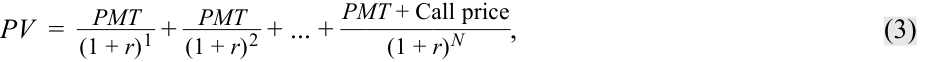
where
trong đó:
PV = the price of the bond
$PV =$ giá của trái phiếu
PMT = coupon payment per period
$PMT =$ khoản thanh toán coupon mỗi kỳ
Call price = price at which a bond can be called on a given date
$\text{Call price} =$ mức giá mà tại đó trái phiếu có thể bị mua lại vào một ngày nhất định
-
r = yield per period or market discount rate
-
N = number of evenly spaced periods to the date when a bond can be called at the call price
- $r =$ lợi suất mỗi kỳ hay lãi suất chiết khấu thị trường
- $N =$ số kỳ cách đều nhau cho đến ngày mà trái phiếu có thể bị mua lại tại mức giá mua lại ($\text{Call price}$)
EXAMPLE 6
VÍ DỤ 6 (EXAMPLE 6)
Yields-to-Call for the VIVU Bond
Lợi Suất Tính Đến Ngày Mua Lại Đối Với Trái Phiếu VIVU (Yields-to-Call for the VIVU Bond)
Assuming the call price schedule for the VIVU bond, the calculation of yields-tofirst, -second, -third, -fourth, and -worst call and yield-to-maturity are as follows: Yield-to-first call: 106.50 = _ (1 +3.25 r )1+ _ (1 +3.25 r )2+ _ (1 +3.25 r )3+ _ (1 +3.25 r )4+ _ (1 +3.25 r )5+ 103.25 + 3.25 (1 + _r )6 . r = 0.025748 × 2 = 0.0515. Alternatively, the YIELD function in Microsoft Excel or Google Sheets can be used. Yield-to-second call: _ _ _ _ _ _ 106.50 = (1 +3.25 r )1+ (1 +3.25 r )2+ (1 +3.25 r )3+ (1 +3.25 r )4+ (1 +3.25 r )5+ (1 +3.25 r )6 __102.50 + 3.25 + (1 +3.25 r )7 (1 + r )8 . r = 0.026237 × 2 = 0.0525. Yield-to-third call: _ _ _ _ _ _ 106.50 = (1 +3.25 r )1+ (1 +3.25 r )2+ (1 +3.25 r )3+ (1 +3.25 r )4+ (1 +3.25 r )5+ (1 +3.25 r )6 _ _ _ _ + (1 +3.25 r )7+ (1 +3.25 r )8+ (1 +3.25 r )9+ 101.75 + 3.25 (1 + r )10 . r = 0.02653 × 2 = 0.0531. Yield-to-fourth call: _ _ _ _ _ _ 106.50 = (1 +3.25 r )1+ (1 +3.25 r )2+ (1 +3.25 r )3+ (1 +3.25 r )4+ (1 +3.25 r )5+ (1 +3.25 r )6 _ _ _ _ _ _ + (1 +3.25 r )7+ (1 +3.25 r )8+ (1 +3.25 r )9+ (1 +3.25 r )10+ (1 +3.25 r )11+ 101.00 + 3.25 (1 + r )12 . r = 0.026811 × 2 = 0.0536. And finally, the yield-to-maturity assuming the bond is not called: _ _ _ _ _ _ 106.50 = (1 +3.25 r )1+ (1 +3.25 r )2+ (1 +3.25 r )3+ (1 +3.25 r )4+ (1 +3.25 r )5+ (1 +3.25 r )6 _ _ _ _ _ _ + (1 +3.25 r )7+ (1 +3.25 r )8+ (1 +3.25 r )9+ (1 +3.25 r )10+ (1 +3.25 r )11+ (1 +3.25 r )12 + 3.25 _ (1 + _r )13+ 100.00 + 3.25 (1 + r )14 .
Giả định lịch biểu giá mua lại đối với trái phiếu VIVU (đang giao dịch ở mức giá 106,50), phép tính lợi suất tính đến ngày mua lại lần thứ nhất, thứ hai, thứ ba, thứ tư, lợi suất thấp nhất có thể (yield-to-worst) và lợi suất đáo hạn như sau:
Lợi suất tính đến ngày mua lại lần thứ nhất (Yield-to-first call):
Cách khác, có thể sử dụng hàm YIELD trong Microsoft Excel hoặc Google Sheets.
Lợi suất tính đến ngày mua lại lần thứ hai (Yield-to-second call):
Alternatively, the YIELD function in Microsoft Excel or Google Sheets can be used.
Lợi suất tính đến ngày mua lại lần thứ ba (Yield-to-third call):
Lợi suất tính đến ngày mua lại lần thứ tư (Yield-to-fourth call):
Và cuối cùng, lợi suất đáo hạn giả định trái phiếu không bị mua lại trước hạn:
Cách khác, có thể sử dụng hàm YIELD trong Microsoft Excel hoặc Google Sheets.
r = 0.026868 × 2 = 0.0537.
$r = 0{,}026868 \times 2 = 0{,}0537$.
In summary, the yield measures for the VIVU bond are as follows:
Tóm lại, các thước đo lợi suất đối với trái phiếu VIVU như sau:
| Yield-to-first call | 5.149% |
|---|---|
| i Yield-to-second call |
5.247% |
| Yield-to-third call | 5.313% |
| Yield-to-fourth call | 5.362% |
| Yield-to-maturity | 5.374% |
| Lợi suất tính đến ngày mua lại lần thứ nhất (Yield-to-first call) | 5,149% |
|---|---|
| Lợi suất tính đến ngày mua lại lần thứ hai (Yield-to-second call) | 5,247% |
| Lợi suất tính đến ngày mua lại lần thứ ba (Yield-to-third call) | 5,313% |
| Lợi suất tính đến ngày mua lại lần thứ tư (Yield-to-fourth call) | 5,362% |
| Lợi suất đáo hạn (Yield-to-maturity) | 5,374% |
The lowest of the sequence of yields-to-call and the yield-to-maturity is known as the yield-to-worst . For the VIVU bond, it is the yield-to-first call of 5.15%. The intent of this measure is to provide to the investor the most conservative measure for the rate of return.
Mức thấp nhất trong chuỗi các lợi suất tính đến ngày mua lại và lợi suất đáo hạn được gọi là lợi suất thấp nhất có thể (yield-to-worst – YTW). Đối với trái phiếu VIVU, đó là lợi suất tính đến ngày mua lại lần thứ nhất ở mức 5,15%. Mục đích của thước đo này là cung cấp cho nhà đầu tư thước đo thận trọng nhất (most conservative measure) về tỷ suất sinh lợi.
The yield-to-worst is a commonly cited yield measure for fixed-rate callable bonds used by bond dealers and investors. However, a more precise approach is to use an option pricing model and an assumption about future interest rate volatility to value the embedded call option. The value of the embedded call option is added to the flat price of the bond to get the option-adjusted price . The investor bears the call risk (the bond issuer has the option to call), so the embedded call option reduces the value of the bond from the investor’s perspective. The investor pays a lower price for the callable bond than if it were option-free. If the bond were non-callable, its price would be higher. The option-adjusted price is used to calculate the option-adjusted yield . The option-adjusted yield is the required market discount rate whereby the price is adjusted for the value of the embedded option. The value of the call option is the price of the option-free bond minus the price of the callable bond.
Lợi suất thấp nhất có thể (yield-to-worst) là một thước đo lợi suất thường được trích dẫn đối với các trái phiếu lãi suất cố định có quyền mua lại trước hạn do các nhà tạo lập thị trường trái phiếu và các nhà đầu tư sử dụng. Tuy nhiên, một phương pháp tiếp cận chính xác hơn là sử dụng mô hình định giá quyền chọn (option pricing model) cùng một giả định về độ biến động lãi suất tương lai để định giá quyền chọn mua lại đi kèm (embedded call option). Giá trị của quyền chọn mua lại đi kèm được cộng vào giá tịnh của trái phiếu để thu được giá đã điều chỉnh quyền chọn (option-adjusted price). Nhà đầu tư gánh chịu rủi ro bị mua lại trước hạn (tổ chức phát hành trái phiếu nắm giữ quyền chọn mua lại), vì vậy quyền chọn mua lại đi kèm làm giảm giá trị của trái phiếu dưới góc độ của nhà đầu tư. Nhà đầu tư trả mức giá thấp hơn cho trái phiếu có quyền mua lại so với trường hợp nó không kèm quyền chọn (option-free). Nếu trái phiếu không kèm quyền mua lại, giá của nó sẽ cao hơn. Giá đã điều chỉnh quyền chọn được sử dụng để tính lợi suất đã điều chỉnh quyền chọn (option-adjusted yield). Lợi suất đã điều chỉnh quyền chọn là lãi suất chiết khấu thị trường yêu cầu mà theo đó mức giá đã được điều chỉnh cho giá trị của quyền chọn đi kèm. Giá trị của quyền chọn mua lại bằng giá của trái phiếu không kèm quyền chọn trừ đi giá của trái phiếu có quyền mua lại trước hạn.
QUESTION SET
BỘ CÂU HỎI (QUESTION SET)
- Identify which of the following yield measures corresponds to the characteristics listed below.
- Xác định thước đo lợi suất nào sau đây tương ứng với các đặc điểm được liệt kê dưới đây.
| Yield Measure | Characteristic |
|---|---|
| A. Simple Yield | 1. Yield measure assuming one compounding period per year |
| B. Effective Annual Rate | 2. Yield measure that restates a yield based on a 30/360 day count to one based on an actual/ actual day count |
| C. Street Convention Yield | 3. Yield measure that is the sum of coupon pay- ments plus the straight-line amortized share of the gain or loss, divided by the flat price |
| D. Government Equivalent Yield |
4. Assumes cash flows are paid on their sched- uled dates, without accounting for weekends and bank holidays |
| Thước đo lợi suất (Yield Measure) | Đặc điểm (Characteristic) |
|---|---|
| A. Lợi suất đơn (Simple Yield) | 1. Thước đo lợi suất giả định một kỳ ghép lãi mỗi năm |
| B. Lãi suất hiệu dụng năm (Effective Annual Rate) | 2. Thước đo lợi suất quy đổi lại mức lợi suất dựa trên quy ước đếm ngày 30/360 sang mức lợi suất dựa trên quy ước đếm ngày thực tế/thực tế |
| C. Lợi suất theo quy ước thông lệ thị trường (Street Convention Yield) | 3. Thước đo lợi suất bằng tổng các khoản thanh toán coupon cộng với phần phân bổ tuyến tính của khoản lãi hoặc lỗ vốn, chia cho giá tịnh |
| D. Lợi suất tương đương trái phiếu chính phủ (Government Equivalent Yield) | 4. Giả định các dòng tiền được thanh toán vào đúng các ngày theo lịch trình của chúng, không tính đến ngày cuối tuần và ngày nghỉ lễ ngân hàng |
Solution:
Lời giải:
| Yield Measure | Characteristic |
|---|---|
| B. Effective Annual Rate | 1. Yield measure assuming one compounding period in the year |
| D. Government Equivalent | 2. Yield measure that restates a yield-to-maturity |
| Yield | based on a 30/360 day count to one based on an actual/actual day count |
| A. Simple Yield | 3. Yield measure that is the sum of coupon pay- ments plus the straight-line amortized share of the gain or loss, divided by the flat price |
| C. Street Convention Yield | 4. Assumes cash flows are paid on their sched- uled dates, without accounting for weekends and bank holidays |
| Thước đo lợi suất (Yield Measure) | Đặc điểm (Characteristic) |
|---|---|
| B. Lãi suất hiệu dụng năm (Effective Annual Rate) | 1. Thước đo lợi suất giả định một kỳ ghép lãi trong năm |
| D. Lợi suất tương đương trái phiếu chính phủ (Government Equivalent Yield) | 2. Thước đo lợi suất quy đổi lại lợi suất đáo hạn dựa trên quy ước đếm ngày 30/360 sang mức lợi suất dựa trên quy ước đếm ngày thực tế/thực tế |
| A. Lợi suất đơn (Simple Yield) | 3. Thước đo lợi suất bằng tổng các khoản thanh toán coupon cộng với phần phân bổ tuyến tính của khoản lãi hoặc lỗ vốn, chia cho giá tịnh |
| C. Lợi suất theo quy ước thông lệ thị trường (Street Convention Yield) | 4. Giả định các dòng tiền được thanh toán vào đúng các ngày theo lịch trình của chúng, không tính đến ngày cuối tuần và ngày nghỉ lễ ngân hàng |
- An analyst calculated the following yields for a four-year callable bond. Determine the yield-to-worst.
- Một chuyên viên phân tích đã tính toán các mức lợi suất sau đây cho một trái phiếu có quyền mua lại kỳ hạn 4 năm. Hãy xác định lợi suất thấp nhất có thể (yield-to-worst).
| Yield Measure | Value |
|---|---|
| Yield-to-first call | 0.000% |
| Yield-to-second call | 0.157% |
| Yield-to-third call | 0.939% |
| Yield-to-maturity | –0.385% |
| Thước đo lợi suất (Yield Measure) | Giá trị (Value) |
|---|---|
| Lợi suất tính đến ngày mua lại lần thứ nhất (Yield-to-first call) | 0,000% |
| Lợi suất tính đến ngày mua lại lần thứ hai (Yield-to-second call) | 0,157% |
| Lợi suất tính đến ngày mua lại lần thứ ba (Yield-to-third call) | 0,939% |
| Lợi suất đáo hạn (Yield-to-maturity) | –0,385% |
Solution:
Lời giải:
–0.3852%. The yield-to-worst is the lowest of the sequence of yields-to-call and the yield-to-maturity. The intent of yield-to-worst is to provide to the investor the most conservative assumption for the rate of return.
$-0{,}385\%$ (hay $-0{,}3852\%$). Lợi suất thấp nhất có thể (yield-to-worst) là mức thấp nhất trong chuỗi các lợi suất tính đến ngày mua lại và lợi suất đáo hạn. Mục đích của yield-to-worst là cung cấp cho nhà đầu tư giả định thận trọng nhất về tỷ suất sinh lợi.
Use the following information compiled by a fixed-income analyst for two bonds, on the day both were issued, to answer Questions 3 and 4.
Sử dụng thông tin sau đây do một chuyên viên phân tích thu nhập cố định tổng hợp cho hai trái phiếu, vào ngày cả hai được phát hành, để trả lời Câu hỏi 3 và 4.
| Corporate Bond | Sovereign Bond | |
|---|---|---|
| Annual coupon rate | 4.00% | 1.00% |
| Coupon frequency | Semiannual | Quarterly |
| Years to maturity | 3 Years | 3 Years |
| Price (per 100 of par) | 91 | 102 |
| Day-count basis | 30/360 | Actual/actual |
| Call price schedule: | 101.25 1–2 Years after settlement |
- |
| Trái phiếu Doanh nghiệp (Corporate Bond) | Trái phiếu Chính phủ (Sovereign Bond) | |
|---|---|---|
| Lãi suất coupon hàng năm (Annual coupon rate) | 4,00% | 1,00% |
| Tần suất coupon (Coupon frequency) | Bán niên (Semiannual) | Hàng quý (Quarterly) |
| Số năm đáo hạn (Years to maturity) | 3 năm | 3 năm |
| Giá (trên 100 đơn vị mệnh giá) (Price) | 91 | 102 |
| Cơ sở đếm ngày (Day-count basis) | 30/360 | Thực tế/thực tế (Actual/actual) |
| Lịch biểu giá mua lại (Call price schedule): | 101,25 (1–2 năm sau ngày thanh toán) | - |
- The current yield of the sovereign bond is approximately:
-
A. 140 bps lower than the current yield of the corporate bond.
-
B. 340 bps lower than the current yield of the corporate bond.
-
C. 140 bps higher than the current yield of the corporate bond.
-
Solution:
- Lợi suất hiện hành (current yield) của trái phiếu chính phủ xấp xỉ:
-
A. thấp hơn 140 bps so với lợi suất hiện hành của trái phiếu doanh nghiệp.
-
B. thấp hơn 340 bps so với lợi suất hiện hành của trái phiếu doanh nghiệp.
-
C. cao hơn 140 bps so với lợi suất hiện hành của trái phiếu doanh nghiệp.
-
Lời giải:
B is correct. The current yield is the annual coupon expressed as a percentage of a bond’s price. The current yield of the corporate bond is 440 bps, while the current yield of the sovereign bond is 98 bps, 342 bps lower.
B là đáp án đúng. Lợi suất hiện hành là khoản coupon hàng năm được biểu thị dưới dạng phần trăm so với giá của trái phiếu. Lợi suất hiện hành của trái phiếu doanh nghiệp là 440 bps ($4/91 = 4{,}3956\%$), trong khi lợi suất hiện hành của trái phiếu chính phủ là 98 bps ($1/102 = 0{,}9804\%$), thấp hơn 342 bps.
Volume 6: Fixed Income
Learning Module 7 Yield and Yield Spread Measures for Fixed-Rate Bonds
Part 2/2: Yield Spread Measures for Fixed-Rate Bonds and Matrix Pricing (PDF Pages 183–196)
Tập 6: Chứng Khoán Thu Nhập Cố Định (Fixed Income)
Học phần 7: Các Thước Đo Lợi Suất và Chênh Lệch Lợi Suất Cho Trái Phiếu Lãi Suất Cố Định (Yield and Yield Spread Measures for Fixed-Rate Bonds)
Phần 2/2: Các Thước Đo Chênh Lệch Lợi Suất Cho Trái Phiếu Lãi Suất Cố Định và Định Giá Ma Trận (Trang PDF 183–196)
- The yield-to-first call of the corporate bond is closest to: A. 2.15%. B. 7.80%. C. 15.00%. Solution:
- Lợi suất tính đến ngày mua lại lần thứ nhất (yield-to-first call) của trái phiếu doanh nghiệp gần nhất với:
A. 2,15%.
B. 7,80%.
C is correct. The yield-to-first call is the internal rate of return r for a callable bond assuming it is called at its earliest scheduled call date for its call price.
C. 15,00%.
Lời giải:
C là đáp án đúng. Lợi suất tính đến ngày mua lại lần thứ nhất là tỷ suất hoàn vốn nội bộ $r$ của một trái phiếu có quyền mua lại trước hạn giả định nó được mua lại vào ngày mua lại theo lịch trình sớm nhất tại mức giá mua lại của nó.
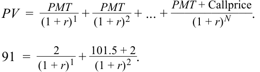
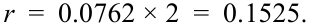
The yield-to-first call for the bond is 15.25%.
Lợi suất tính đến ngày mua lại lần thứ nhất của trái phiếu là 15,25%.
YIELD SPREAD MEASURES FOR FIXED-RATE BONDS AND MATRIX PRICING
CÁC THƯỚC ĐO CHÊNH LỆCH LỢI SUẤT CHO TRÁI PHIẾU LÃI SUẤT CỐ ĐỊNH VÀ ĐỊNH GIÁ MA TRẬN (YIELD SPREAD MEASURES FOR FIXED-RATE BONDS AND MATRIX PRICING)
4
4
compare, calculate, and interpret yield and yield spread measures for fixed-rate bonds
so sánh, tính toán và diễn giải các thước đo lợi suất (yield measures) và chênh lệch lợi suất (yield spread measures) cho trái phiếu lãi suất cố định
Yield Spreads over Benchmark Rates
Chênh Lệch Lợi Suất So Với Lãi Suất Chuẩn (Yield Spreads over Benchmark Rates)
In fixed-income security analysis, it is important to understand why bond prices and yields-to-maturity change. To do this, it is useful to decompose a yield-to-maturity into a base rate or benchmark and an issuer-specific spread . For example, an earlier lesson introduced government benchmark bonds as the most liquid securities with the lowest default risk for a specific time-to-maturity in each market. The yield spread is the difference between the yield-to-maturity and the benchmark yield.
Trong phân tích chứng khoán thu nhập cố định, điều quan trọng là phải hiểu tại sao giá trái phiếu và lợi suất đáo hạn lại thay đổi. Để làm được điều này, sẽ rất hữu ích khi phân tách lợi suất đáo hạn thành một lãi suất cơ sở hay lãi suất chuẩn (benchmark) và một mức chênh lệch (spread) đặc thù của tổ chức phát hành. Ví dụ, một bài học trước đã giới thiệu trái phiếu chuẩn của chính phủ (government benchmark bonds) là những chứng khoán có tính thanh khoản cao nhất với rủi ro vỡ nợ thấp nhất cho một thời gian đáo hạn cụ thể trên mỗi thị trường. Chênh lệch lợi suất (yield spread) là hiệu số giữa lợi suất đáo hạn của trái phiếu và lợi suất chuẩn (benchmark yield).
These two components help investors distinguish between macroeconomic (top-down) and microeconomic (bottom-up) factors that affect the bond price and, therefore, its yield-to-maturity. The benchmark rate captures the top-down factors, while the spread captures the bottom-up factors, as shown in Exhibit 5.
Hai thành phần này giúp các nhà đầu tư phân biệt giữa các yếu tố kinh tế vĩ mô (từ trên xuống – top-down) và kinh tế vi mô (từ dưới lên – bottom-up) tác động đến giá trái phiếu và do đó tác động đến lợi suất đáo hạn của nó. Lãi suất chuẩn nắm bắt các yếu tố từ trên xuống, trong khi mức chênh lệch nắm bắt các yếu tố từ dưới lên, như được thể hiện trong Bảng minh họa 5.
Exhibit 5: Yield-to-Maturity Components
Bảng minh họa 5: Các Thành Phần của Lợi Suất Đáo Hạn (Exhibit 5: Yield-to-Maturity Components)
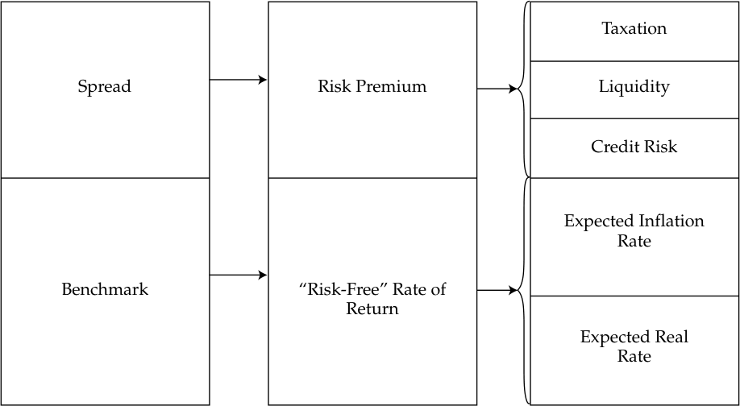
Chú thích hình ảnh: Cấu trúc các thành phần của Lợi suất đáo hạn (YTM): - Mức chênh lệch (Spread) — Phần bù rủi ro (Risk Premium): Thuế (Taxation), Thanh khoản (Liquidity), Rủi ro tín dụng (Credit Risk). - Lãi suất chuẩn (Benchmark) — Tỷ suất sinh lợi “phi rủi ro” (“Risk-Free” Rate of Return): Tỷ lệ lạm phát kỳ vọng (Expected Inflation Rate), Lãi suất thực kỳ vọng (Expected Real Rate).
The most used benchmark rate is the most recently issued government bond, known as an on-the-run security. The on-the-run government bond is the most actively traded security and has a coupon rate closest to the current market discount rate for that maturity. That implies that it is priced close to par value. Seasoned government bonds are called off-the-run . On-the-run bonds typically trade at slightly lower yields-to-maturity than off-the-run bonds with the same or similar times-to-maturity because of differences in demand for the securities and, sometimes, differences in the cost of financing the government security in the repo market.
Lãi suất chuẩn được sử dụng nhiều nhất là trái phiếu chính phủ được phát hành gần đây nhất, được gọi là chứng khoán mới phát hành (on-the-run). Trái phiếu chính phủ on-the-run là chứng khoán được giao dịch sôi động nhất và có lãi suất coupon gần nhất với lãi suất chiết khấu thị trường hiện hành cho kỳ hạn đó. Điều này ngụ ý rằng nó được định giá gần với mệnh giá (par value). Các trái phiếu chính phủ đã lưu hành lâu hơn được gọi là chứng khoán phát hành đợt cũ (off-the-run). Các trái phiếu on-the-run thường giao dịch ở mức lợi suất đáo hạn thấp hơn một chút so với các trái phiếu off-the-run có cùng thời gian đáo hạn hoặc có thời gian đáo hạn tương tự do sự khác biệt về nhu cầu đối với chứng khoán và đôi khi là sự khác biệt về chi phí tài trợ chứng khoán chính phủ trên thị trường repo.
The yield spread over a specific benchmark is referred to as the benchmark spread and represents the risk premium for the credit and liquidity risks and possibly the tax impact of holding a specific bond. Exhibit 6 shows the relationship between yields-to-maturity for a specific issuer and a benchmark government yield curve.
Mức chênh lệch lợi suất so với một chuẩn tham chiếu cụ thể được gọi là chênh lệch chuẩn (benchmark spread) và đại diện cho phần bù rủi ro đối với rủi ro tín dụng, rủi ro thanh khoản và có thể cả tác động thuế của việc nắm giữ một trái phiếu cụ thể. Bảng minh họa 6 thể hiện mối quan hệ giữa lợi suất đáo hạn của một tổ chức phát hành cụ thể và đường cong lợi suất chính phủ chuẩn (benchmark government yield curve).
Exhibit 6: Issuer and Government Yield Curves
Bảng minh họa 6: Đường Cong Lợi Suất của Tổ Chức Phát Hành và của Chính Phủ (Exhibit 6: Issuer and Government Yield Curves)
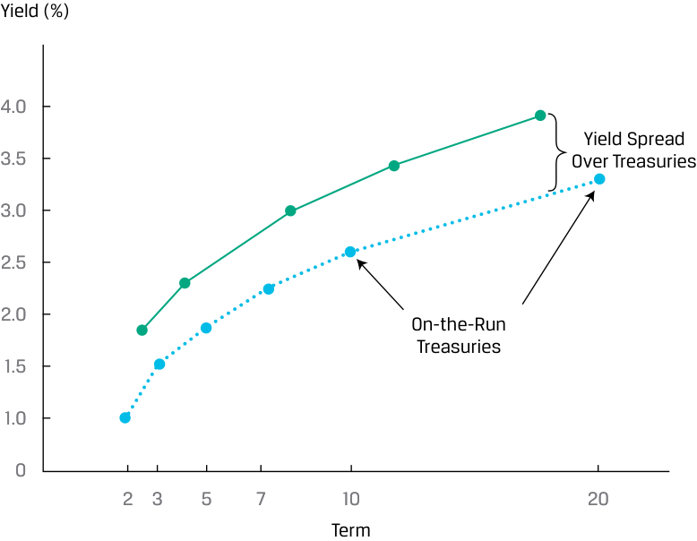
Chú thích hình ảnh: Đồ thị Đường cong lợi suất với trục tung là Lợi suất (Yield %) và trục hoành là Kỳ hạn (Term: 2, 3, 5, 7, 10, 20): - Đường bên dưới: Trái phiếu Kho bạc mới phát hành (On-the-Run Treasuries). - Đường bên trên: Bao gồm thêm phần Chênh lệch lợi suất so với trái phiếu Kho bạc (Yield Spread Over Treasuries).
Spreads allow an analyst to better assess a bond’s relative value on a historical and comparative basis by controlling for (excluding) macroeconomic factors, such as a broad increase or decrease in benchmark rates. An analyst might compare the current spread relative to its historical average and its past highs and lows and to other bonds to help identify whether a bond is under- or overpriced on a relative basis.
Các mức chênh lệch lợi suất (spreads) cho phép chuyên viên phân tích đánh giá tốt hơn giá trị tương đối (relative value) của một trái phiếu trên cơ sở lịch sử và so sánh bằng cách kiểm soát (loại trừ) các yếu tố kinh tế vĩ mô, chẳng hạn như sự tăng hoặc giảm trên diện rộng của lãi suất chuẩn. Một chuyên viên phân tích có thể so sánh mức chênh lệch hiện tại với mức trung bình lịch sử cũng như các mức đỉnh và đáy trong quá khứ của nó, đồng thời so sánh với các trái phiếu khác để giúp xác định liệu một trái phiếu đang bị định giá thấp hay định giá cao trên cơ sở tương đối.
The yield spread in basis points over an actual or interpolated government bond yield is known as the G-spread and represents the return for bearing risks relative to the sovereign bond. If there is no sovereign benchmark bond that matches the maturity of the bond, an approximation process for finding the G-spread must be used, as illustrated in Exhibit 7 and shown in the following example.
Mức chênh lệch lợi suất tính bằng điểm cơ bản (basis points) so với lợi suất trái phiếu chính phủ thực tế hoặc nội suy được gọi là chênh lệch G (G-spread) và đại diện cho tỷ suất sinh lợi để gánh chịu các rủi ro so với trái phiếu chính phủ trung ương. Nếu không có trái phiếu chuẩn của chính phủ trung ương nào khớp với kỳ hạn của trái phiếu đang xét, một quy trình xấp xỉ để tìm G-spread phải được sử dụng, như được minh họa trong Bảng minh họa 7 và được trình bày trong ví dụ sau đây.
Exhibit 7: Finding G-Spreads When a Comparable Benchmark Bond Does Not Exist
Bảng minh họa 7: Tìm Chênh Lệch G Khi Không Có Trái Phiếu Chuẩn Tương Đương (Exhibit 7: Finding G-Spreads When a Comparable Benchmark Bond Does Not Exist)
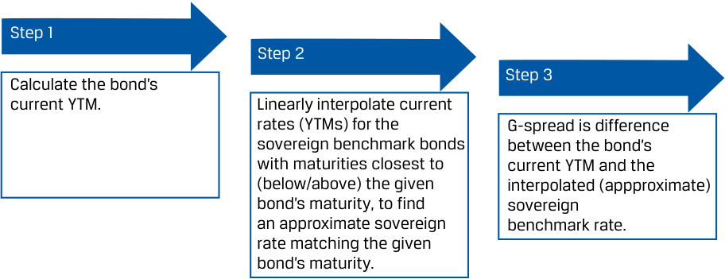
Chú thích hình ảnh: Quy trình 3 bước tính G-spread khi không có trái phiếu chuẩn cùng kỳ hạn: - Bước 1 (Step 1): Tính YTM hiện tại của trái phiếu. - Bước 2 (Step 2): Nội suy tuyến tính lãi suất (YTM) hiện tại của các trái phiếu chính phủ chuẩn có kỳ hạn gần nhất (ngắn hơn / dài hơn) với kỳ hạn của trái phiếu đã cho, để tìm mức lãi suất chính phủ xấp xỉ khớp với kỳ hạn của trái phiếu đã cho. - Bước 3 (Step 3): G-spread là hiệu số giữa YTM hiện tại của trái phiếu và lãi suất chuẩn chính phủ nội suy (xấp xỉ).
EXAMPLE 7
VÍ DỤ 7 (EXAMPLE 7)
Calculating G-Spread without a Comparable Benchmark Bond
Tính Chênh Lệch G Khi Không Có Trái Phiếu Chuẩn Tương Đương (Calculating G-Spread without a Comparable Benchmark Bond)
Assume that the Russian Federation has issued a 30-year US dollar–denominated sovereign bond based on the following terms:
Giả sử Liên bang Nga đã phát hành một trái phiếu chính phủ kỳ hạn 30 năm định danh bằng đồng đô la Mỹ dựa trên các điều khoản sau đây:
| 5 |
.25% Russian Federation Bonds Brief Summary of Terms |
|---|---|
| Issuer: | Russian Federation |
| Settlement Date: | [T + 5 Business Days] |
| Maturity Date: | [30 Years from Settlement Date] |
| Principal Amount: | USD 750 million |
| Interest: | 5.25% fixed semiannual 30/360 basis |
| Issuance Price: | 99.625 |
| Issuance Spread: | 200 bp versus current US 30y Treasury |
| Issuance and Trading: | US Private Placement under Rule 144A DTC / Euroclear / Clearstream |
| Seniority: | Senior Unsecured |
| Exchanges: | Luxembourg |
| Trái Phiếu Liên Bang Nga Lãi Suất 5,25% (5.25% Russian Federation Bonds) Tóm Tắt Ngắn Gọn Các Điều Khoản (Brief Summary of Terms) |
|
|---|---|
| Tổ chức phát hành (Issuer): | Liên bang Nga (Russian Federation) |
| Ngày thanh toán (Settlement Date): | [T + 5 Ngày làm việc] |
| Ngày đáo hạn (Maturity Date): | [30 năm kể từ Ngày thanh toán] |
| Mệnh giá gốc (Principal Amount): | 750 triệu USD |
| Lãi suất (Interest): | Lãi suất cố định bán niên 5,25%, cơ sở đếm ngày 30/360 |
| Giá phát hành (Issuance Price): | 99,625 |
| Chênh lệch phát hành (Issuance Spread): | 200 bp so với trái phiếu Kho bạc Hoa Kỳ kỳ hạn 30 năm hiện hành |
| Phát hành và Giao dịch (Issuance and Trading): | Phát hành riêng lẻ tại Hoa Kỳ theo Quy tắc 144A (US Private Placement under Rule 144A) DTC / Euroclear / Clearstream |
| Thứ tự ưu tiên trả nợ (Seniority): | Trái phiếu cấp cao không có tài sản đảm bảo (Senior Unsecured) |
| Sở giao dịch (Exchanges): | Luxembourg |
Six years after the original issuance date, on 15 March 2026, the bond is trading at a price of 123.5 per 100 face value, and an analyst observes that 20-year and 30-year US Treasury yields are currently 2.00% and 2.25%, respectively. Calculate the current G-spread of the Russian Federation bond.
Sáu năm sau ngày phát hành ban đầu, vào ngày 15 tháng 3 năm 2026, trái phiếu này đang giao dịch ở mức giá 123,5 trên mỗi 100 đơn vị mệnh giá, và một chuyên viên phân tích quan sát thấy lợi suất trái phiếu Kho bạc Hoa Kỳ kỳ hạn 20 năm và 30 năm hiện lần lượt ở mức 2,00% và 2,25%. Hãy tính mức G-spread hiện tại của trái phiếu Liên bang Nga.
- Step 1 Calculate the current yield-to-maturity of the Russian Federation bond. We may solve for r using the general formula for bond price and yield:
- Bước 1: Tính lợi suất đáo hạn hiện tại của trái phiếu Liên bang Nga. Chúng ta có thể giải tìm $r$ bằng công thức tổng quát cho giá và lợi suất trái phiếu:
PV = PMT 1/(1 + r )1 + PMT 2/(1 + r )2 + … + ( PMTN + FVN )/(1 + r )N .
- Or we can use the Excel or Google Sheets YIELD function assuming a settlement date of 15 March 2026:
- Hoặc chúng ta có thể sử dụng hàm
YIELDtrong Excel hay Google Sheets giả định ngày thanh toán giao dịch là 15 tháng 3 năm 2026:
=YIELD(DATE(2026,3,15),DATE(2050,3,15),5.25%,123.5,100,2,0)
=YIELD(DATE(2026,3,15),DATE(2050,3,15),5.25%,123.5,100,2,0)
= 3.756%.
= 3.756%.
- Step 2 Linearly interpolate the current 20-year ( r 20 y ) and 30-year ( r 30 y ) US Treasury yields to solve for an approximate 24-year ( r 24 y ) US Treasury benchmark:
- Bước 2: Nội suy tuyến tính lợi suất trái phiếu Kho bạc Hoa Kỳ kỳ hạn 20 năm ($r_{20y}$) và 30 năm ($r_{30y}$) hiện hành để giải tìm mức chuẩn trái phiếu Kho bạc Hoa Kỳ kỳ hạn 24 năm xấp xỉ ($r_{24y}$):
1. Solve for the weights of the 20-year and the 30-year bonds in the interpolation calculation:
1. Giải tìm tỷ trọng của trái phiếu kỳ hạn 20 năm và 30 năm trong phép tính nội suy:
20-year bond weight = w 20 = 60% [= (30 – 24)/(30 – 20)]. 30-year bond weight = w 30 = 40%, or (1 – w 20).
Tỷ trọng trái phiếu kỳ hạn 20 năm $= w_{20} = 60\%$ $[= (30 - 24)/(30 - 20)]$. Tỷ trọng trái phiếu kỳ hạn 30 năm $= w_{30} = 40\%$, hay $(1 - w_{20})$.
-
Note that ( w 20 × 20) + ( w 30 × 30) = 24.
-
2. The 24-year government rate is a weighted average of the 20-year bond rate and the 30-year US Treasury rate using the weights above.
-
Lưu ý rằng $(w_{20} \times 20) + (w_{30} \times 30) = 24$.
-
2. Lãi suất chính phủ kỳ hạn 24 năm là mức bình quân gia quyền của lãi suất trái phiếu kỳ hạn 20 năm và lãi suất trái phiếu Kho bạc Hoa Kỳ kỳ hạn 30 năm sử dụng các tỷ trọng ở trên.
r 24 y = w 20 × r 20 y + w 30 × r 30 y
= (60% × 2.00%) + (40% × 2.25%) = 2.10%. Step 3 The G-spread is the difference between the current Russian Federation bond yield-to-maturity and the 24-year US government rate: 1.656% = 3.756% – 2.10%, so the G-spread is 166 bps.
The yield spread for a bond over the standard swap rate in that currency of the same tenor is known as the I-spread or interpolated spread. This type of spread is a comparison against a short-term market-based reference rate and is common practice for pricing and quoting euro-denominated corporate bonds, using a euro interest rate swap as the benchmark. For example, the five-year zero-coupon euro bond issued by the Chinese government at a negative yield-to-maturity from a prior lesson was priced at a rate of “mid-swaps plus 30 bps,” where “mid-swaps” is the average of the bid and offered swap rates.
Bước 3: G-spread là hiệu số giữa lợi suất đáo hạn hiện tại của trái phiếu Liên bang Nga và lãi suất chính phủ Hoa Kỳ kỳ hạn 24 năm: $1{,}656\% = 3{,}756\% - 2{,}10\%$, vì vậy G-spread là 166 bps.
Mức chênh lệch lợi suất của một trái phiếu so với lãi suất hoán đổi tiêu chuẩn (standard swap rate) bằng cùng đồng tiền và có cùng kỳ hạn được gọi là chênh lệch I (I-spread) hay chênh lệch nội suy (interpolated spread). Loại chênh lệch này là một phép so sánh với một lãi suất tham chiếu ngắn hạn dựa trên thị trường và là thông lệ phổ biến để định giá cũng như báo giá các trái phiếu doanh nghiệp định danh bằng đồng euro, sử dụng hợp đồng hoán đổi lãi suất đồng euro (euro interest rate swap) làm chuẩn tham chiếu. Ví dụ, trái phiếu đồng euro không trả lãi định kỳ kỳ hạn 5 năm do chính phủ Trung Quốc phát hành ở mức lợi suất đáo hạn âm từ bài học trước đã được định giá ở mức “lãi suất hoán đổi trung bình cộng 30 bps” (“mid-swaps plus 30 bps”), trong đó “lãi suất hoán đổi trung bình” (“mid-swaps”) là mức trung bình cộng của lãi suất hoán đổi chào mua (bid) và chào bán (offered).
Issuers will use the I-spread to determine the relative cost of fixed-rate bonds versus floating-rate alternatives, such as a bank loan or commercial paper, while investors use it as a measure of a bond’s credit risk. Whereas a standard interest rate swap involves an exchange of fixed for floating cash flows based on a floating index, an asset swap converts the periodic fixed coupon of a specific bond to a market reference rate (MRR) plus or minus a spread. If the bond is priced close to par, this conversion approximates the price of a bond’s credit risk over the MRR index.
Các tổ chức phát hành sẽ sử dụng I-spread để xác định chi phí tương đối của trái phiếu lãi suất cố định so với các phương án lãi suất thả nổi thay thế, chẳng hạn như khoản vay ngân hàng hoặc thương phiếu (commercial paper), trong khi các nhà đầu tư sử dụng nó như một thước đo rủi ro tín dụng của trái phiếu. Trong khi một hợp đồng hoán đổi lãi suất tiêu chuẩn bao gồm việc trao đổi các dòng tiền cố định lấy dòng tiền thả nổi dựa trên một chỉ số lãi suất thả nổi, thì một hợp đồng hoán đổi tài sản (asset swap) chuyển đổi khoản coupon cố định định kỳ của một trái phiếu cụ thể thành lãi suất tham chiếu thị trường (market reference rate – MRR) cộng hoặc trừ một mức chênh lệch. Nếu trái phiếu được định giá gần với mệnh giá, phép chuyển đổi này xấp xỉ với cái giá của rủi ro tín dụng của trái phiếu cao hơn chỉ số MRR.
EXAMPLE 8
VÍ DỤ 8 (EXAMPLE 8)
Yield Spreads Using Bloomberg Fixed-Income Relative Value (FIRV)
Chênh Lệch Lợi Suất Sử Dụng Chức Năng Giá Trị Tương Đối Thu Nhập Cố Định (FIRV) của Bloomberg (Yield Spreads Using Bloomberg Fixed-Income Relative Value (FIRV))
The Bloomberg FIRV function for the 3.75% Apple bond that matures on 12 September 2047 shows the following. Identify the yield and yield spread measures.
Chức năng FIRV của Bloomberg đối với trái phiếu Apple lãi suất 3,75% đáo hạn vào ngày 12 tháng 9 năm 2047 hiển thị như sau. Hãy xác định các thước đo lợi suất và chênh lệch lợi suất.
FIRV Function for 3.75% AAPL Bond Maturing 12 September 2047
Chức Năng FIRV Đối Với Trái Phiếu AAPL 3,75% Đáo Hạn Ngày 12 Tháng 9 Năm 2047 (FIRV Function for 3.75% AAPL Bond Maturing 12 September 2047)
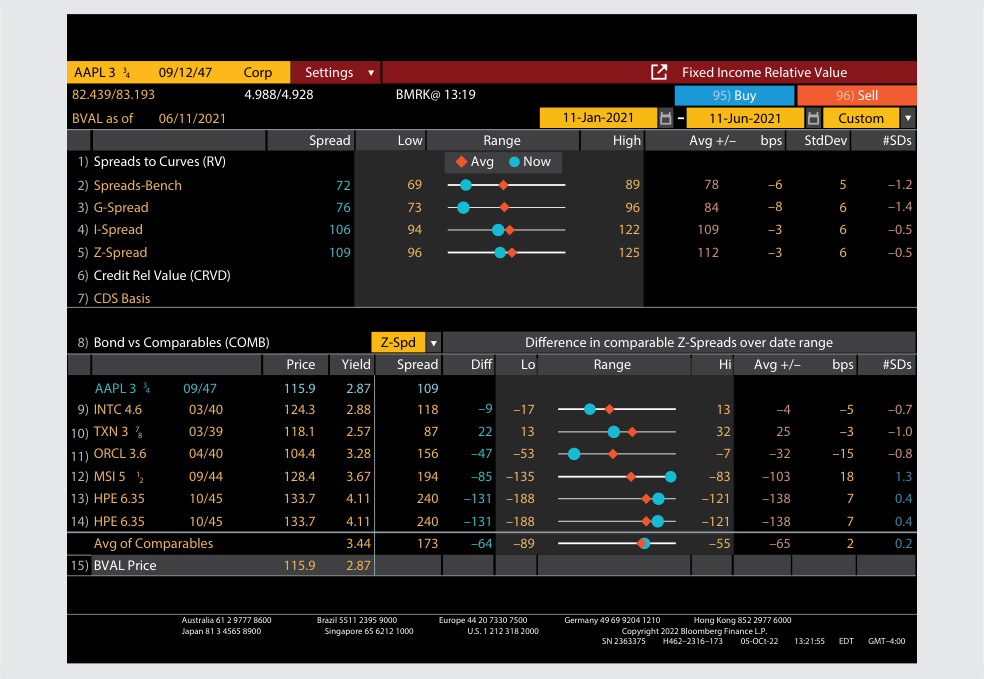
Chú thích hình ảnh: Màn hình Bloomberg Fixed Income Relative Value (FIRV) cho trái phiếu AAPL 3 ¾ 09/12/47: - Góc trên bên trái hiển thị các mức chênh lệch lợi suất hiện tại (Now):
Spreads-Bench= 72 bps,G-Spread= 76 bps,I-Spread= 106 bps,Z-Spread= 109 bps (cùng với mức thấp nhất Low, cao nhất High, trung bình Avg, độ lệch chuẩn StdDev trong khoảng thời gian từ 11/01/2021 đến 11/06/2021). - Phần dưới hiển thị bảng so sánh trái phiếu với các trái phiếu tương đương (Bond vs Comparables - COMB) gồm INTC, TXN, ORCL, MSI, HPE với Giá (Price), Lợi suất (Yield) và Chênh lệch Z (Z-Spd).
© 2021 Bloomberg L.P. All rights reserved. Reproduced with permission.
© 2021 Bloomberg L.P. Bảo lưu mọi quyền. Được tái bản với sự cho phép.
Solution:
Lời giải:
The yield spreads are in the top left corner. On the date of analysis:
Các mức chênh lệch lợi suất nằm ở góc trên bên trái. Vào ngày phân tích:
-
The yield spread over a particular Treasury benchmark was 72 bps.
-
The G-spread over an interpolated government bond yield was 76 bps. The spread over the benchmark and the G-spread sometimes differ by a few basis points, especially if the benchmark maturity differs from that of the underlying bond.
-
The bond’s I-spread was 106 bps. An I-spread larger than the G-spread indicates that Treasury yields were slightly higher than swap rates at that time.
- Mức chênh lệch lợi suất so với một trái phiếu Kho bạc chuẩn cụ thể (
Spreads-Bench) là 72 bps. - Mức chênh lệch G (
G-Spread) so với lợi suất trái phiếu chính phủ nội suy là 76 bps. Mức chênh lệch so với chuẩn tham chiếu và G-spread đôi khi chênh nhau một vài điểm cơ bản, đặc biệt nếu kỳ hạn của trái phiếu chuẩn khác với kỳ hạn của trái phiếu cơ sở. - Mức chênh lệch I (
I-Spread) của trái phiếu là 106 bps. Mức I-spread lớn hơn G-spread cho thấy lợi suất trái phiếu Kho bạc cao hơn một chút so với lãi suất hoán đổi (swap rates) vào thời điểm đó.
The use of these spreads in investment strategies will be covered in more detail later. In general, an analyst will track these spreads relative to their averages and historical highs and lows to identify relative value.
Việc sử dụng các mức chênh lệch này trong các chiến lược đầu tư sẽ được trình bày chi tiết hơn ở phần sau. Nhìn chung, một chuyên viên phân tích sẽ theo dõi các mức chênh lệch này so với mức trung bình cũng như các mức đỉnh và đáy lịch sử của chúng để xác định giá trị tương đối.
Yield Spreads over the Benchmark Yield Curve
Chênh Lệch Lợi Suất So Với Đường Cong Lợi Suất Chuẩn (Yield Spreads over the Benchmark Yield Curve)
Whereas the G-spread and I-spread are the difference between two single numbers and use the same discount rate (yield-to-maturity) for each cash flow, a different approach is to calculate a constant yield spread over a government (or interest rate swap) spot curve , or series of yields. This spread is known as the zero-volatility spread ( Z-spread ) of a bond over the benchmark rate. In other words, the Z-spread is what must be added to each benchmark spot rate to make the present value of a bond’s cash flows equal its price. In Example 8, the Z-spread for the Apple bond, as quoted using the Bloomberg FIRV function, was 109 bps.
Trong khi G-spread và I-spread là hiệu số giữa hai con số đơn lẻ và sử dụng cùng một lãi suất chiết khấu (lợi suất đáo hạn) cho mỗi dòng tiền, một phương pháp tiếp cận khác là tính một mức chênh lệch lợi suất không đổi (constant yield spread) cộng thêm vào một đường cong lãi suất giao ngay (spot curve, tức một chuỗi các mức lợi suất) của chính phủ (hoặc của hợp đồng hoán đổi lãi suất). Mức chênh lệch này được gọi là chênh lệch độ biến động bằng không (chênh lệch Z – Z-spread / zero-volatility spread) của một trái phiếu so với lãi suất chuẩn. Nói cách khác, Z-spread là phần phải được cộng thêm vào mỗi mức lãi suất giao ngay chuẩn (benchmark spot rate) để làm cho giá trị hiện tại của các dòng tiền của trái phiếu bằng với giá của nó. Trong Ví dụ 8, Z-spread đối với trái phiếu Apple, như được báo giá bằng chức năng FIRV của Bloomberg, là 109 bps.
The Z-spread over the benchmark spot curve can be calculated with Equation 4:
Z-spread so với đường cong lãi suất giao ngay chuẩn có thể được tính bằng Phương trình 4:
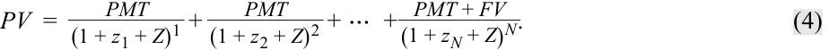
The benchmark spot or zero rates— z 1, z 2, . . . , zN —are derived from the government yield curve (or from fixed rates on interest rate swaps), as shown in detail in a later lesson. Z is the Z-spread per period and is the same for all time periods. In Equation 4 is an integer, so the calculation is on a coupon date when the accrued interest is zero. Sometimes, the Z-spread is called the “static spread” because it is constant (and has zero volatility). In practice, the Z-spread is usually calculated in a spreadsheet using a goal seek function or similar solver function.
Các mức lãi suất giao ngay hay lãi suất zero chuẩn (benchmark spot or zero rates)—$z_1, z_2, \dots, z_N$—được suy ra từ đường cong lợi suất chính phủ (hoặc từ lãi suất cố định trên các hợp đồng hoán đổi lãi suất), như sẽ được trình bày chi tiết trong một bài học sau. $Z$ là mức Z-spread mỗi kỳ và giữ nguyên như nhau cho tất cả các kỳ thời gian. Trong Phương trình 4, số mũ là một số nguyên, vì vậy phép tính được thực hiện vào một ngày trả lãi coupon khi lãi tích lũy bằng không. Đôi khi, Z-spread còn được gọi là “chênh lệch tĩnh” (“static spread”) bởi vì nó là hằng số (và có độ biến động bằng không). Trên thực tế, Z-spread thường được tính trong bảng tính bằng chức năng Goal Seek hoặc công cụ giải phương trình (Solver) tương tự.
The Z-spread is also used to calculate the option-adjusted spread (OAS) on a callable bond. The OAS, like the option-adjusted yield, is based on an option-pricing model and an assumption about future interest rate volatility. Then, the value of the embedded call option, which is stated in basis points per year, is subtracted from the yield spread.
Z-spread cũng được sử dụng để tính chênh lệch đã điều chỉnh quyền chọn (option-adjusted spread – OAS) trên một trái phiếu có quyền mua lại trước hạn. Giống như lợi suất đã điều chỉnh quyền chọn, OAS dựa trên một mô hình định giá quyền chọn và một giả định về độ biến động lãi suất trong tương lai. Sau đó, giá trị của quyền chọn mua lại đi kèm, được biểu thị bằng số điểm cơ bản mỗi năm (basis points per year), sẽ được trừ đi khỏi mức chênh lệch lợi suất.
OAS = Z-spread – Option value in basis points per year. ~~(5)~~
This important measure is covered in detail later.
Thước đo quan trọng này sẽ được trình bày chi tiết ở phần sau.
Exhibit 8: Summary of Yield Spreads
Bảng minh họa 8: Tóm Tắt Các Thước Đo Chênh Lệch Lợi Suất (Exhibit 8: Summary of Yield Spreads)
| Type | Description |
|---|---|
| G-spread | Government spread, the yield spread in basis points over an actual or interpolated government bond. Used in the US, the UK, Japan, and other jurisdictions. |
| I-spread | Interpolated spread, the yield spread of a bond over the stan- dard swap rate in the same currency and with the same tenor. Euro-denominated corporate bonds are typically priced vs. a euro interest rate swap benchmark. |
| Z-spread | Zero-volatility spread, a constant yield spread over a government (or interest rate swap) spot curve used to derive the term structure of credit spreads for an issuer. |
| Option-adjusted spread |
The Z-spread adjusted for the value of an embedded call option. |
| Loại (Type) | Mô tả (Description) |
|---|---|
| G-spread | Chênh lệch chính phủ (Government spread), mức chênh lệch lợi suất tính bằng điểm cơ bản so với một trái phiếu chính phủ thực tế hoặc nội suy. Được sử dụng tại Hoa Kỳ, Vương quốc Anh, Nhật Bản và các khu vực tài phán khác. |
| I-spread | Chênh lệch nội suy (Interpolated spread), mức chênh lệch lợi suất của một trái phiếu so với lãi suất hoán đổi tiêu chuẩn bằng cùng đồng tiền và có cùng kỳ hạn. Các trái phiếu doanh nghiệp định danh bằng đồng euro thường được định giá so với chuẩn tham chiếu là hợp đồng hoán đổi lãi suất đồng euro. |
| Z-spread | Chênh lệch độ biến động bằng không (Zero-volatility spread), một mức chênh lệch lợi suất không đổi cộng thêm vào đường cong lãi suất giao ngay của chính phủ (hoặc của hợp đồng hoán đổi lãi suất), được sử dụng để suy ra cấu trúc kỳ hạn của chênh lệch tín dụng cho một tổ chức phát hành. |
| Chênh lệch đã điều chỉnh quyền chọn (Option-adjusted spread – OAS) | Mức Z-spread đã được điều chỉnh cho giá trị của quyền chọn mua lại đi kèm (embedded call option). |
EXAMPLE 9
VÍ DỤ 9 (EXAMPLE 9)
The G-Spread and Z-Spread
Chênh Lệch G và Chênh Lệch Z (The G-Spread and Z-Spread)
A 1.5% semiannual coupon, US dollar–denominated bond was issued by PT Indonesia Infrastructure Finance (IIF) three years ago. Currently, the bond has two years remaining to maturity and is trading at a price of 100.45. The twoyear, 0.75% semiannual payment government benchmark bond is trading at a price of 100.750.
Một trái phiếu trả lãi coupon bán niên 1,5%/năm, định danh bằng đồng đô la Mỹ đã được PT Indonesia Infrastructure Finance (IIF) phát hành cách đây ba năm. Hiện tại, trái phiếu còn hai năm nữa là đáo hạn và đang giao dịch ở mức giá 100,45. Trái phiếu chuẩn của chính phủ kỳ hạn hai năm, trả lãi bán niên 0,75%/năm đang giao dịch ở mức giá 100,750.
The government spot rates (stated as effective annual rates) are as follows:
Lãi suất giao ngay của chính phủ (government spot rates, được công bố dưới dạng lãi suất kỳ bán niên/hiệu dụng trong phép tính dưới đây) như sau:
| Maturity | Spot Rate |
|---|---|
| 6M | 0.127% |
| 12M | 0.249% |
| 18M | 0.314% |
| 24M | 0.373% |
| Kỳ hạn (Maturity) | Lãi suất giao ngay (Spot Rate) |
|---|---|
| 6M (6 tháng) | 0,127% |
| 12M (12 tháng) | 0,249% |
| 18M (18 tháng) | 0,314% |
| 24M (24 tháng) | 0,373% |
1. Calculate the G-spread for the IIF bond.
1. Tính G-spread cho trái phiếu IIF.
2. Calculate the Z-spread for the IIF bond.
2. Tính Z-spread cho trái phiếu IIF.
Solution to 1:
Lời giải câu 1:
The G-spread is the yield spread in basis points over an actual or interpolated government bond. The yield-to-maturity for the IIF bond is 1.271%:
G-spread là mức chênh lệch lợi suất tính bằng điểm cơ bản so với một trái phiếu chính phủ thực tế hoặc nội suy. Lợi suất đáo hạn của trái phiếu IIF là 1,271%:
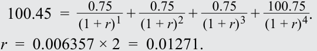
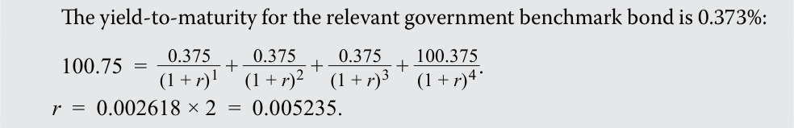
Therefore, the G-spread is 0.01271 – 0.005235 = 75 bps.
Lợi suất đáo hạn của trái phiếu chuẩn chính phủ có liên quan là 0,373% (trong ảnh gốc ghi 0,373% ở lời dẫn nhưng phương trình tính ra $r = 0{,}001865 \times 2 = 0{,}00373$, hoặc $0{,}002618 \times 2 = 0{,}005235$ theo số in trong ảnh):
Do đó, G-spread là $0{,}01271 - 0{,}005235 = 75\text{ bps}$.
Solution to 2:
Lời giải câu 2:
The Z-spread is a constant yield spread over a government spot or interest rate swap curve.
Z-spread là một mức chênh lệch lợi suất không đổi cộng thêm vào đường cong lãi suất giao ngay của chính phủ hoặc đường cong hoán đổi lãi suất.
The Z-spread for the IIF bond is the value of Z that solves the following equation, using the government spot rates provided:
Z-spread đối với trái phiếu IIF là giá trị của $Z$ giải phương trình sau đây, sử dụng các mức lãi suất giao ngay chính phủ đã cung cấp:
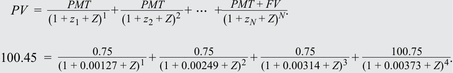
The Solver add-in for Microsoft Excel finds Z = 0.00268, or 27 bps, by setting the price (sum of present values of cash flows) equal to 100.45 as the objective and Z as the change variable. Please refer to the candidate learning ecosystem online for a spreadsheet demonstrating the calculation in the downloadable Excel workbook.
Tiện ích bổ sung Solver trong Microsoft Excel tìm được $Z = 0{,}00268$, hay 27 bps (trên cơ sở bán niên, hoặc nhân 2 theo năm), bằng cách đặt mức giá (tổng giá trị hiện tại của các dòng tiền) bằng 100,45 làm hàm mục tiêu và $Z$ làm biến thay đổi. Vui lòng tham khảo hệ sinh thái học tập dành cho ứng viên trực tuyến để xem bảng tính minh họa phép tính này trong sổ làm việc Excel có thể tải xuống.
QUESTION SET
BỘ CÂU HỎI (QUESTION SET)
- Each of the five items below is a risk of investing in fixed-income instruments. For each, identify the component of yield-to-maturity that provides compensation for that risk: benchmark or spread.
- Credit
Expected Real Rate
Taxation
- Mỗi mục trong năm mục dưới đây là một rủi ro khi đầu tư vào các công cụ thu nhập cố định. Đối với mỗi mục, hãy xác định thành phần của lợi suất đáo hạn mang lại sự đền bù cho rủi ro đó: lãi suất chuẩn (benchmark) hay mức chênh lệch (spread).
- Tín dụng (Credit)
- Lãi suất thực kỳ vọng (Expected Real Rate)
- Thuế (Taxation)
- Tỷ lệ lạm phát kỳ vọng (Expected Inflation Rate)
- Thanh khoản (Liquidity)
Expected Inflation Rate
Liquidity
Benchmark Spread
Lãi suất chuẩn (Benchmark) — Mức chênh lệch (Spread)
Solution:
Lời giải:
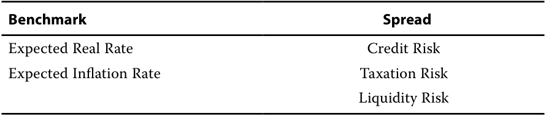
Chú thích hình ảnh: Phân loại rủi ro vào hai thành phần: - Lãi suất chuẩn (Benchmark): Lãi suất thực kỳ vọng (Expected Real Rate), Tỷ lệ lạm phát kỳ vọng (Expected Inflation Rate). - Mức chênh lệch (Spread): Rủi ro tín dụng (Credit Risk), Rủi ro thuế (Taxation Risk), Rủi ro thanh khoản (Liquidity Risk).
The two components of yield—the benchmark and the spread—allow us to distinguish macroeconomic and microeconomic factors.
Hai thành phần của lợi suất—lãi suất chuẩn (benchmark) và mức chênh lệch (spread)—cho phép chúng ta phân biệt các yếu tố kinh tế vĩ mô và kinh tế vi mô.
The benchmark yield captures the macroeconomic factors: the expected rate of inflation in the currency in which the bond is denominated, general economic growth and the business cycle, foreign exchange rates, and the impact of monetary and fiscal policy. Changes in those factors impact all bonds in the market.
Lợi suất chuẩn nắm bắt các yếu tố kinh tế vĩ mô: tỷ lệ lạm phát kỳ vọng của đồng tiền định danh trái phiếu, tăng trưởng kinh tế chung và chu kỳ kinh doanh, tỷ giá hối đoái và tác động của chính sách tiền tệ cũng như chính sách tài khóa. Những thay đổi trong các yếu tố đó tác động đến tất cả các trái phiếu trên thị trường.
The yield spread captures the microeconomic factors specific to the bond issuer and the bond itself: credit risk, liquidity and trading in comparable securities, and the tax status of the bond.
Chênh lệch lợi suất nắm bắt các yếu tố kinh tế vi mô đặc thù đối với tổ chức phát hành trái phiếu và bản thân trái phiếu đó: rủi ro tín dụng, tính thanh khoản và giao dịch của các chứng khoán tương đương, cùng tình trạng chịu thuế của trái phiếu.
- A Mexican corporate non-callable bond matures in three years and has an annual coupon of 5.5%. The government spot rates (stated as effective annual rates) are as follows:
- Một trái phiếu doanh nghiệp Mexico không kèm quyền mua lại trước hạn đáo hạn sau 3 năm và có lãi suất coupon hàng năm là 5,5%. Lãi suất giao ngay của chính phủ (được công bố dưới dạng lãi suất hiệu dụng năm) như sau:
Government Spot Rates
Lãi Suất Giao Ngay Của Chính Phủ (Government Spot Rates)
| Maturity | Spot Rate |
|---|---|
| 1Y | 2.98% |
| 2Y | 3.48% |
| 3Y | 4.00% |
| Kỳ hạn (Maturity) | Lãi suất giao ngay (Spot Rate) |
|---|---|
| 1Y (1 năm) | 2,98% |
| 2Y (2 năm) | 3,48% |
| 3Y (3 năm) | 4,00% |
Using the provided spot rates and a Z-spread of 378 bps, calculate the price of the Mexican corporate bond.
Sử dụng các mức lãi suất giao ngay được cung cấp và mức Z-spread là 378 bps, hãy tính giá của trái phiếu doanh nghiệp Mexico này.
Solution:
Lời giải:
The price of the bond is 94.20.
Giá của trái phiếu là 94,20.
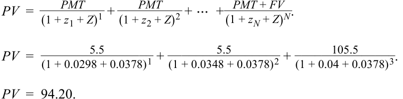
Use the information provided for Questions 3 and 4.
Sử dụng thông tin được cung cấp cho Câu hỏi 3 và 4.
A fixed-income analyst has compiled the following statistics for three corporate bonds issued by companies domiciled in three different countries.
Một chuyên viên phân tích thu nhập cố định đã tổng hợp các số liệu thống kê sau đây cho ba trái phiếu doanh nghiệp được phát hành bởi các công ty có trụ sở tại ba quốc gia khác nhau.
| Bond | Yield-to-Maturity | Applicable Swap Rate |
|---|---|---|
| A | 13.379% | 12.419% |
| B | 8.121% | 6.527% |
| C | 5.406% | 4.184% |
| Trái phiếu (Bond) | Lợi suất đáo hạn (Yield-to-Maturity) | Lãi suất hoán đổi áp dụng (Applicable Swap Rate) |
|---|---|---|
| A | 13,379% | 12,419% |
| B | 8,121% | 6,527% |
| C | 5,406% | 4,184% |
- Which bond most likely has the greatest credit risk?
-
A. Bond A
-
B. Bond B
-
C. Bond C
- Trái phiếu nào nhiều khả năng nhất có rủi ro tín dụng lớn nhất?
- A. Trái phiếu A
- B. Trái phiếu B
- C. Trái phiếu C
Solution:
Lời giải:
B is correct. As a “bottom-up” or issuer-specific risk factor, credit risk is a component of a yield spread. To estimate which bond most likely has the greatest credit risk, we calculate the I-spread, or the yield spread for a bond over a swap rate for the same currency and tenor.
B là đáp án đúng. Là một yếu tố rủi ro “từ dưới lên” (“bottom-up”) hay đặc thù của tổ chức phát hành, rủi ro tín dụng là một thành phần của chênh lệch lợi suất (yield spread). Để ước tính trái phiếu nào nhiều khả năng có rủi ro tín dụng lớn nhất, chúng ta tính I-spread, tức mức chênh lệch lợi suất của một trái phiếu so với lãi suất hoán đổi cho cùng đồng tiền và kỳ hạn.
| Bond | Yield-to-Maturity | Applicable Swap Rate | I-Spread |
|---|---|---|---|
| A | 13.379% | 12.419% | 96 bps |
| B | 8.121% | 6.527% | 159 bps |
| C | 5.406% | 4.184% | 122 bps |
| Trái phiếu (Bond) | Lợi suất đáo hạn (Yield-to-Maturity) | Lãi suất hoán đổi áp dụng (Applicable Swap Rate) | I-Spread |
|---|---|---|---|
| A | 13,379% | 12,419% | 96 bps |
| B | 8,121% | 6,527% | 159 bps |
| C | 5,406% | 4,184% | 122 bps |
- Assume that the issuers of Bonds A, B, and C are comparable in terms of credit risk and that the bonds have similar liquidity and tax characteristics. Based solely on the information provided, which bond might offer an investor the least relative value?
-
A. Bond A
-
B. Bond B
-
C. Bond C
- Giả sử các tổ chức phát hành Trái phiếu A, B và C tương đương nhau về mặt rủi ro tín dụng và các trái phiếu này có đặc điểm thanh khoản cũng như thuế tương tự nhau. Chỉ dựa trên thông tin được cung cấp, trái phiếu nào có thể mang lại cho nhà đầu tư giá trị tương đối thấp nhất (least relative value)?
- A. Trái phiếu A
- B. Trái phiếu B
- C. Trái phiếu C
Solution:
Lời giải:
A is correct. If the bonds are judged to be comparable in all material respects, then the least (most) relative value corresponds to the bond with the lowest (highest) spread. At 96 bps, Bond A has the lowest spread and thus the least attractive valuation to an investor.
A là đáp án đúng. Nếu các trái phiếu được đánh giá là tương đương nhau trên mọi khía cạnh trọng yếu, thì giá trị tương đối thấp nhất (cao nhất) sẽ tương ứng với trái phiếu có mức chênh lệch lợi suất thấp nhất (cao nhất). Ở mức 96 bps, Trái phiếu A có mức chênh lệch thấp nhất và do đó có mức định giá kém hấp dẫn nhất đối với một nhà đầu tư.
- Match the following characteristics to on-the-run and off-the-run bonds:
-
Seasoned government bonds
-
Most recently issued government bonds
-
Has a coupon rate below or above the current market discount rate for that maturity
-
Has a coupon rate closest to the current market discount rate for that maturity
-
Trades at slightly lower yields-to-maturity compared to bonds with the same or a similar time-to-maturity
-
Trades at slightly higher yields-to-maturity compared to bonds with the same or a similar time-to-maturity
- Ghép các đặc điểm sau đây với trái phiếu mới phát hành (on-the-run) và trái phiếu phát hành đợt cũ (off-the-run):
- Trái phiếu chính phủ đã lưu hành lâu (Seasoned government bonds)
- Trái phiếu chính phủ được phát hành gần đây nhất (Most recently issued government bonds)
- Có lãi suất coupon thấp hơn hoặc cao hơn lãi suất chiết khấu thị trường hiện hành cho kỳ hạn đó
- Có lãi suất coupon gần nhất với lãi suất chiết khấu thị trường hiện hành cho kỳ hạn đó
- Giao dịch ở mức lợi suất đáo hạn thấp hơn một chút so với các trái phiếu có cùng thời gian đáo hạn hoặc có thời gian đáo hạn tương tự
- Giao dịch ở mức lợi suất đáo hạn cao hơn một chút so với các trái phiếu có cùng thời gian đáo hạn hoặc có thời gian đáo hạn tương tự
Solution:
Lời giải:
| On-the-Run | Off-the-Run |
|---|---|
| Most recently issued government bonds |
Seasoned government bonds |
| Has a coupon rate closest to the current market discount rate for that maturity |
Has a coupon rate below or above the current market discount rate for that maturity |
| Trades at slightly lower | Trades at slightly higher |
| yields-to-maturity compared to | yields-to-maturity compared to |
| bonds with the same or a similar | bonds with the same or a similar |
| time-to-maturity | time-to-maturity |
| Mới phát hành (On-the-Run) | Phát hành đợt cũ (Off-the-Run) |
|---|---|
| Trái phiếu chính phủ được phát hành gần đây nhất | Trái phiếu chính phủ đã lưu hành lâu (Seasoned government bonds) |
| Có lãi suất coupon gần nhất với lãi suất chiết khấu thị trường hiện hành cho kỳ hạn đó | Có lãi suất coupon thấp hơn hoặc cao hơn lãi suất chiết khấu thị trường hiện hành cho kỳ hạn đó |
| Giao dịch ở mức lợi suất đáo hạn thấp hơn một chút so với các trái phiếu có cùng thời gian đáo hạn hoặc có thời gian đáo hạn tương tự | Giao dịch ở mức lợi suất đáo hạn cao hơn một chút so với các trái phiếu có cùng thời gian đáo hạn hoặc có thời gian đáo hạn tương tự |
~~PRACTICE PROBLEMS~~
CÂU HỎI THỰC HÀNH (PRACTICE PROBLEMS)
1. A bond issued by RTR pays a quarterly coupon of 3.25%, has three years to maturity, and is currently trading at 97.28. The semiannual bond basis yield is closest to:
1. Một trái phiếu do RTR phát hành trả lãi coupon hàng quý là 3,25%/năm, còn 3 năm nữa là đáo hạn và hiện đang giao dịch ở mức giá 97,28. Lợi suất theo cơ sở trái phiếu bán niên (semiannual bond basis yield) gần nhất với:
A. 1.055%.
A. 1,055%.
B. 2.121%.
B. 2,121%.
C. 4.242%.
C. 4,242%.
2. An analyst is analyzing a three-year, 2.25% annual coupon bond issued by QWE Company. Currently, the bond’s yield-to-maturity is 2.707%. The three-year swap rate is 1.840%. The government spot rates are presented in the table.
2. Một chuyên viên phân tích đang phân tích một trái phiếu kỳ hạn 3 năm, trả lãi coupon hàng năm 2,25% do Công ty QWE phát hành. Hiện tại, lợi suất đáo hạn của trái phiếu là 2,707%. Lãi suất hoán đổi kỳ hạn 3 năm là 1,840%. Lãi suất giao ngay của chính phủ được trình bày trong bảng dưới đây.
| Government Spot | |
|---|---|
| Maturity | Rate |
| 1Y | 0.899% |
| 2Y | 1.260% |
| 3Y | 1.904% |
| Kỳ hạn (Maturity) | Lãi suất giao ngay của chính phủ (Government Spot Rate) |
|---|---|
| 1Y (1 năm) | 0,899% |
| 2Y (2 năm) | 1,260% |
| 3Y (3 năm) | 1,904% |
The G-Spread (in basis points) for the QWE bond is closest to:
Mức G-Spread (tính bằng điểm cơ bản) đối với trái phiếu QWE gần nhất với:
A. 80.
A. 80.
B. 87.
B. 87.
- C. 135.
C. 135.
3. The I-spread (in basis points) for the QWE bond is closest to:
3. Mức I-spread (tính bằng điểm cơ bản) đối với trái phiếu QWE gần nhất với:
-
A. 46.
-
B. 80.
C. 87.
-
A. 46.
-
B. 80.
-
C. 87.
4. If the price of the QWE bond is 98.70% of par, its Z-spread (in basis points) is closest to:
4. Nếu giá của trái phiếu QWE bằng 98,70% mệnh giá, thì mức Z-spread của nó (tính bằng điểm cơ bản) gần nhất với:
A. 80.
A. 80.
- B. 82.
B. 82.
C. 87.
C. 87.
5. An analyst is analyzing a six-year callable bond with a semiannual coupon of 2.50% trading at a price of 98.90 per 100 par value and the following call schedule:
5. Một chuyên viên phân tích đang phân tích một trái phiếu có quyền mua lại trước hạn kỳ hạn 6 năm với lãi suất coupon bán niên 2,50%/năm đang giao dịch ở mức giá 98,90 trên mỗi 100 đơn vị mệnh giá và có lịch biểu mua lại sau đây:
Call Schedule
Lịch Biểu Mua Lại (Call Schedule)
| Period | Call Price |
|---|---|
| 4–5 Years | 101.50 |
| 5–6 Years | 101.00 |
| Giai đoạn (Period) | Giá mua lại (Call Price) |
|---|---|
| 4–5 năm | 101,50 |
| 5–6 năm | 101,00 |
Match the yields below to the respective yield measures.
Hãy ghép các mức lợi suất dưới đây với các thước đo lợi suất tương ứng.
| Yield | Yield Measure |
|---|---|
| 2.6998% | Yield-to-first call |
| 2.6998% | i Yield-to-second call |
| 2.9253% | Yield-to-maturity |
| 3.1497% | Yield-to-worst |
| Lợi suất (Yield) | Thước đo lợi suất (Yield Measure) |
|---|---|
| 2,6998% | Lợi suất tính đến ngày mua lại lần thứ nhất (Yield-to-first call) |
| 2,6998% | Lợi suất tính đến ngày mua lại lần thứ hai (Yield-to-second call) |
| 2,9253% | Lợi suất đáo hạn (Yield-to-maturity) |
| 3,1497% | Lợi suất thấp nhất có thể (Yield-to-worst) |
~~SOLUTIONS~~
LỜI GIẢI (SOLUTIONS)
- C is correct. As a first step, we need to calculate the quarterly yield and annualize it:
- C là đáp án đúng. Ở bước đầu tiên, chúng ta cần tính lợi suất hàng quý và quy đổi theo năm:
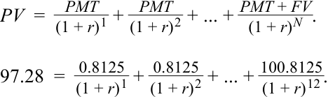
r = 0.01055 × 4 = 0.0422.
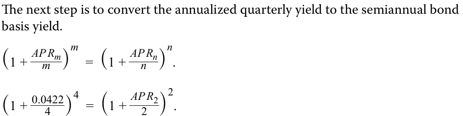
AP R 2 = 0.04242 = 4.242 % .
A is incorrect because 1.0550% is the yield per quarter.
Bước tiếp theo là chuyển đổi mức lợi suất hàng quý quy đổi theo năm sang lợi suất theo cơ sở trái phiếu bán niên:
B is incorrect because 2.1100% is the yield per quarter (1.0550%) multiplied by 2.
A không đúng vì 1,0550% là lợi suất mỗi quý.
- A is correct. The G-spread is a yield spread above that of a government bond with the same maturity date. The yield-to-maturity for the corporate bond is 2.7070%. The yield-to-maturity for the government benchmark bond is 1.9036%.
B không đúng vì 2,1100% (hay 2,121%) là lợi suất mỗi nửa năm (hoặc lợi suất mỗi quý nhân với 2).
G-spread = 2.707% – 1.904% = 0.8034% = 80.3 bps.
B is incorrect because 87 bps is the I-spread calculated as the yield spread of a bond over the standard swap rate in the same currency and with the same tenor.
- A là đáp án đúng. G-spread là mức chênh lệch lợi suất cao hơn lợi suất của một trái phiếu chính phủ có cùng ngày đáo hạn. Lợi suất đáo hạn của trái phiếu doanh nghiệp là 2,7070%. Lợi suất đáo hạn của trái phiếu chính phủ chuẩn là 1,9036% (làm tròn 1,904%).
C is incorrect because 135 bps is the spread calculated as the difference between the yield-to-maturity of the QWE bond and the average of government rates for all maturities.
- C is correct. The I-spread is the yield spread of a bond over the standard swap rate in the same currency and with the same tenor. The yield-to-maturity for the corporate bond is 2.707%, and the swap rate for the same maturity is 1.840%.
B không đúng vì 87 bps là mức I-spread được tính bằng mức chênh lệch lợi suất của trái phiếu so với lãi suất hoán đổi tiêu chuẩn bằng cùng đồng tiền và có cùng kỳ hạn.
I-spread = 2.707% – 1.840% = 0.867% = 87 bps.
C không đúng vì 135 bps là mức chênh lệch được tính bằng hiệu số giữa lợi suất đáo hạn của trái phiếu QWE và trung bình cộng lãi suất chính phủ của tất cả các kỳ hạn.
A is incorrect because 46 bps is the difference between the bond’s yield-to-maturity and coupon rate.
- C là đáp án đúng. I-spread là mức chênh lệch lợi suất của một trái phiếu so với lãi suất hoán đổi tiêu chuẩn bằng cùng đồng tiền và có cùng kỳ hạn. Lợi suất đáo hạn của trái phiếu doanh nghiệp là 2,707%, và lãi suất hoán đổi cho cùng kỳ hạn là 1,840%.
2.707% – 2.250% = 0.457% = 46 bps.
B is incorrect because 80 bps is the G-spread—the yield-to-maturity for the corporate bond less the yield-to-maturity for the government benchmark bond.
A không đúng vì 46 bps là hiệu số giữa lợi suất đáo hạn và lãi suất coupon của trái phiếu:
G-spread = 2.707% – 1.904% = 80 bps.
- B is correct. To calculate the Z-spread, we must solve for Z in the following equation, given the spot rates and price of the bond:
B không đúng vì 80 bps là G-spread—lợi suất đáo hạn của trái phiếu doanh nghiệp trừ đi lợi suất đáo hạn của trái phiếu chính phủ chuẩn:
PMT_ PMT_ PV_ = (1 + z 1 + Z )1 + (1 + z 2 + Z )2 + ⋯ + (1 +PMT zN+ +FV Z )N.
- B là đáp án đúng. Để tính Z-spread, chúng ta phải giải tìm $Z$ trong phương trình sau đây, khi biết lãi suất giao ngay và giá của trái phiếu:
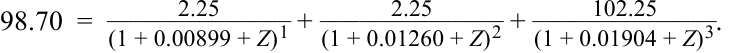
The Solver add-in for Microsoft Excel finds Z = 0.0082, or 82 bps, by setting the price (sum of present values of cash flows) equal to 98.70 as the objective and Z as the change variable. Please refer to the candidate learning ecosystem online for a spreadsheet demonstrating the calculation in the downloadable Excel workbook.
Tiện ích bổ sung Solver trong Microsoft Excel tìm được $Z = 0{,}0082$, hay 82 bps, bằng cách đặt mức giá (tổng giá trị hiện tại của các dòng tiền) bằng 98,70 làm hàm mục tiêu và $Z$ làm biến thay đổi. Vui lòng tham khảo hệ sinh thái học tập dành cho ứng viên trực tuyến để xem bảng tính minh họa phép tính này trong sổ làm việc Excel có thể tải xuống.
A is incorrect because 80 bps is the value of the G-spread, not the Z-spread. The G-spread is calculated as the difference between the QWE bond yield and the yield of the government bond with the same maturity:
A không đúng vì 80 bps là giá trị của G-spread, chứ không phải Z-spread. G-spread được tính bằng hiệu số giữa lợi suất trái phiếu QWE và lợi suất của trái phiếu chính phủ có cùng kỳ hạn:
G-spread = 2.707% – 1.904% = 80 bps.
C is incorrect because 87 bps is the I-spread, not the Z-spread. The I-spread is calculated as a yield spread of a bond over the standard swap rate in the same currency and with the same tenor. The yield-to-maturity for the corporate bond is 2.707%, and the swap rate for the same maturity is 1.840%.
C không đúng vì 87 bps là I-spread, chứ không phải Z-spread. I-spread được tính bằng mức chênh lệch lợi suất của một trái phiếu so với lãi suất hoán đổi tiêu chuẩn bằng cùng đồng tiền và có cùng kỳ hạn. Lợi suất đáo hạn của trái phiếu doanh nghiệp là 2,707%, và lãi suất hoán đổi cho cùng kỳ hạn là 1,840%:
I-spread = 2.707% – 1.840% = 87 bps.
- The correct yield values matched with the corresponding yield measures are presented in the following table:
- Các giá trị lợi suất đúng được ghép với các thước đo lợi suất tương ứng được trình bày trong bảng sau đây:
| Yield | Yield Measure |
|---|---|
| 3.1497% | Yield-to-first call |
| 2.9253% | i Yield-to-second call |
| 2.6998% | Yield-to-maturity |
| 2.6998% | Yield-to-worst |
| Lợi suất (Yield) | Thước đo lợi suất (Yield Measure) |
|---|---|
| 3,1497% | Lợi suất tính đến ngày mua lại lần thứ nhất (Yield-to-first call) |
| 2,9253% | Lợi suất tính đến ngày mua lại lần thứ hai (Yield-to-second call) |
| 2,6998% | Lợi suất đáo hạn (Yield-to-maturity) |
| 2,6998% | Lợi suất thấp nhất có thể (Yield-to-worst) |
Calculation of yield-to-first call:
Phép tính lợi suất tính đến ngày mua lại lần thứ nhất (yield-to-first call):
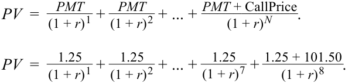
r = 0.01548 × 2 = 0.031497.
Calculation of yield-to-second call:
Phép tính lợi suất tính đến ngày mua lại lần thứ hai (yield-to-second call):
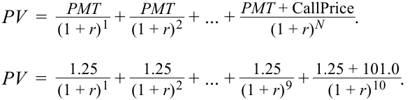
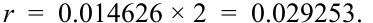
Calculation of yield-to-maturity:
Phép tính lợi suất đáo hạn (yield-to-maturity):
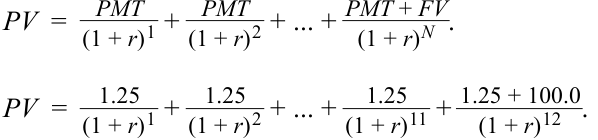
r = 0.013499 × 2 = 0.026998.